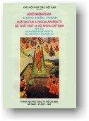

|
BuddhaSasana Home Page |
Vietnamese, with Unicode VU Times font |
|  |
THERAVĀDA
BỘ NHƠN CHẾ ÐỊNH Dịch giả: |
|
Xin lưu ý: Cần có phông UnicodeViệt-Phạn VU Times cài vào máy để đọc các chữ Pàli. |
|
TRÍCH CÚ TỪ ÐIỂN (PADABHĀJANĪYĀNUKKAMO) Akathaṅkathī 135. 144. : Không nghi ngờ Akaniṭṭha 56. : Cỏi sắc-cứu-cánh thiên Akaniṭṭhagāmī 7. 56. 152. : Sắc-cứu-cánh-thiên thú Akasiralābhī 19-24. : Ðắc không khổ cực, có được không khổ cưc Akicchalābhī 19-24. : Ðắc không khó khăn, có được không khó khăn Akuppadhamma 7. 20. : Bất động pháp. Akusala 11. 62. 64. 72. 74. 110. 141. 144. 148. : Bất thiện; không khéo léo, không thiện xảo. Akusalamūla 65. : Bất thiện căn. Akkodhana 8. 68. : Vô sân; người vô sân. Akkoseyya 100. : Chửi mắng. Akkhāta 135. : Không nói ra, không thuật lại. Agāra 135. : Tại gia. Agāravatā 63. : Thái độ bất kính. Agālha 93. : Sự gắt gao Aguttadvāra 8. 64. : Người bất phòng hộ môn. Aguttadvāratā 64. : Sự bất phòng hộ môn, sự không ngăn giữ cửa. Agutti 64. : Sự không gìn giữ Agopanā 64. : Sự không chặn giữ Agga 145. 146. : Tối cao Aggahitatta 60. 70. : Thái độ không thu nhiếp, không tiếp độ. Aggi 135. : Lửa Acapala 98. : Không dao động Acarima 32. : Không sau, không có ở sau. Acelaka 135. : Lõa thể Accāsarā 61. 71. : Sự trá hình Acchandika 28. : Không có hoài bảo, không có sự ước mơ. Acchādetvā 135. : Ðắp mặc, vận mặc Aja 135. : Con dê Ajānaṃ 88. : Không biết, khi không biết Ajina 135. : Áo da con sơn dương Ajinakkhipa 135. : Áo da con hắc báo Ajelakapṭiggahhhhana 135. : Sự thọ nhận dê cừu. Ajjhattasaññojana 8. 67. : Nội triền. Ajjhāvasanta 135. : Ðời sống. Ajjhāvasati 143. : Sống ở, ở vào, dự vào. Ajjhupekkhitabba 9 . 100. : cần được lãnh đạm, cần làm ngơ. Ajjhottharati 144. : Vuốt ve. Ajjhotthariyamāna 144. : Khi được vuốt ve. Aññatra 99. : Trừ khi là, ngoại trừ Aññāṇa 65. : Sự không biết. Aññātāvindriya 6. : Cụ tri quyền. Aññāya 139. : Do không hiểu biết. Aññindriya 6. : Dĩ tri quyền. Aṭṭhapanā 58. 68. : Sự lưu lại. Aṭṭhāna 20. 22. : Không có sự kiện, vô lý. Aḍḍha 129. : Sang trọng Aḍḍhamāsika 135. : Ăn nữa tháng một lần Atappa 55. : Cõi Vô Nhiệt Thiên Atikkantamānusaka 135. : Siêu nhân vượt khỏi khả năng người. Atta 10. 103. 104. 134. 135. : Tự ngã, tự mình Attantapa 10. 135. : Tự hành khổ, tự đốt nóng Attaparitāpan āmuyogamanugutta 10. 135. : Cố tình tự đốt nóng Attahita 10. 134. : Tự lợi, tự làm lợi ích. Attahetu 88. : Vì nhân mình, nhân vì ta. Attha 108. 139. : Nghĩa lý ý nghĩ điều lợi ích. Attha ṅgama 135. : Tiêu diệt, diệt trừ. Atthavād ī 135. : Nói lợi ích. Atthasañhita 135. : Hữu ích, liên hệ. Athena 135. : Không chiếm đoạt Adassana 65. : Sự không nhận thấy Adinnādāna 104. 106. 135. : Sự trộm cắp, sự lấy vật chưa cho Adinnādāyī 105. 106. 135. : Người trộm cắp Adukkhamasukha 135. : Phi khổ phi lạc Adhāraṇatā 65. : Tình trạng không ghi nhận Adhika 99. : Thắng vượt, trội hơn Adhigaccheyya 90. : Có thể đạt đến, có thể thành đạt Adhigata 90. : Ðã đạt được Adhipaññādhammavipassanā 10. 137. : Tuệ minh-sát-pháp. Adhimatta 45. 149. 151. : Khuynh hướng Anagāgiya 135. : Vô gia cư, hạnh không nhà Anaṅgana 135. 144. : Vô uế Anaññataññassāmītindriya 6. : Tri vị tri quyền Anattantapa 10. 135. : Người không làm khổ mình. Anattamana 95. : Bất bình Anattamanatā 58. 68. : Sự bất bình, thái độ bất bình. Anattha 100. : Sự bất lợi. Anadhigata 90. : Chưa đạt được. Ananubodha 65. : Sự không liễu ngộ. Ananuvicca 10. 125. : Chưa nghĩ xét. Ananussati 65. : Sự không nhớ theo. Ananussuta 12. 38. 39. 147. 151. : Chưa được nghe, đã không được nghe. Anantarahita 135. : Trống trơn, không có vật ngăn. Anabhijjhā 105. : Vô tham. Anabhijjhālu 105. : Không tham lam. Anabhisambujjhati 147. : Không giác ngộ. Anariya 7. 34 phi thành nhân. Anavakāsa 20. 22 vô cớ, không duyên cớ, không cơ hội. Anavajja 10 . 107 vô tội, không lỗi lầm. Anavajjasukha 135. : An lạc vô tội. Anavassesa 57. : Sự không dư sót, hoàn toàn, trọn vẹn. Anavasesappahāna 57 . : hoàn toàn đoạn trừ, đoạn trừ trọn vẹn. Anāgāmiphalasacchikiriyā 7. 57. 150 sự tác chứng quả bất lai, chứng quả A na Hàm. Anāgām 7. 12. 51. 57. 92. 101. 147. 150. : Bậc bất lai, bậc A-na-Hàm. Anādaratā 63. : Thái độ bất cần. Anā dariya 63. : Tính cách bất cần. Anārakkha 64. : Sự không bảo vệ. Anāvattidhamma 52. 56. 138. 140. 188. : Không còn trở lui lại không còn quay lại. Anāvikamma 61. 71. : Hành động mờ ám. Anāsava 84. 89. 98. : Vô lậu. Aniyata 7. 30. : Bất định phần, vô định phần. Anissukī 8. 70 người vô tật, người không bỏn xẻn. Anukampa 99. : Sự bi mẩn, trắc ẩn, tâm tiếp độ. Anuggahissāmi 99. : Ta sẽ học, ta sẽ thu thập. Anuññāta 85. 86. : Sự cho phép, chuẩn y. Anuttara 135. : Vô thượng sĩ. Anuttānīkamma 61. 71. : Hành động tinh vi. Anuddaya 99. : Sự xót thương, lòng từ ái. Anuddhata 98. 135. 144. : Vô phóng dật, không tháo động. Anunaḷa 98. : Không kiêu căng. Anupannāhī 8. 68. : Người vô hậu. Anupapanna 10. 139. : Không hành theo. Anupavādaka 135. : Người không phỉ báng. Anupubba 108. 141. : Tuần tự, thứ lớp. Anuppadātā 135. : Sự cổ vỏ, sự động viên Anuppabandhanā 58. 68. : Sự cột chặt. Anubyañjanāggāhī 67. 74. 135. : Chấp tướng riêng, chấp nét chi tiết. Anuyoga 135. : Sự cố tình, sự thực hiện, sự thi hành. Anurakkhanābhabba 7. 24. : Khả bảo trì, có khả năng do phòng hộ. Anuvicca 126. : Ðã suy xét kỹ. Anusañceteti 23. : Chú tâm, chăm chú vào. Anusamandanā 58. 68. : Sự tích tụ. Anusāsiyamana 141. : Khi được chỉ bảo. Anuseti 93. 124. : ngấm ngầm, tiềm tàng. Anusotagāmī 10. 138. : Người đi thuận dòng. Anussati 75. : Sự tùy niệm. Anekavihita 135. : Ða dạng, nhiều hình thức. Anela 29. : Khôn ngoan. Anottappa 62. : Sự vô úy. Anottappī 8. 62. : Người vô úy, người không ghê sợ. Antarāparinibbāyī 7. 52. 152. : Trung bang bất-hoàn. Antopūti 84. 100 . : nội tâm hôi hám bẩn thỉu bên trong. Andha 9. 90. : Mù mắt, tối đui. Anna 129. : Cơm ăn. Anvāssaveyyum 135. : Có thể xâm nhiễm. Apaccakkhakamma 65. : Sự không phản tỉnh. Apaccakkhāya 144. : Khi chưa xả bỏ. Apaccavekkhaṇnā 65. : Sự không phản kháng. Apara 135. : Khác, kẻ khác, tha nhân. Aparakāla 58. 68. : Lúc sau, giai đoạn sau, thời điểm sau. Aparantapa 10. 135. : Không làm khổ người khác. Aparipūra 99. : Chưa được đầy đủ. Apariyogāhanā 63. : Sự không thấm nhuần. Apariyogāhetvā 125. : Chưa suy luận, chưa nghĩ suy. Aparisesa 11. 141. : Hết sạch, không còn dư sót. Aparihānadhamma 7. 22. : Sự bất suy pháp, có pháp tánh không thối hóa. Apalāsī 8. 69. : Người vô hiểm độc. Apassaṃ 88. : Không thấy, khi không thấy. Apāya 129. 135. : Khổ cảnh. Apilāpannatā 75. : Thái độ không lơ đảng. Apubba 32. : Không trước, không có trước. Appa 89. 110 . 135. : Ít, một chút. Appaka 139. : Ít, số ít. Appaggha 94. : Ít giá trị. Appaggahatā 95. : Tình trạng ít giá trị, sự kiện ít giá trị. Appaccaya 89. 100. : Sự bực tức. Appaṭikūlaggāhitā 73. : Lập trường không chống đối. Appaṭinissagga 59. 69. : Sự không cởi mở. Appaṭivedha 65. : Sự không thông suốt. Appaṭisankhā 64. : Sự không quán tưởng, không suy quán. Appaṭissati 65. : Sự không nhớ ra. Appaṭissavatā 63. : Thái độ bất tuân. Appatta 52. : Chưa đến, chưa tới. Appannapānabhojana 129. : Sự thiếu thốn về cơm nước. Appameyya 9. 98. : Không thể ước lượng, vô lượng. Appasadda 97. : Ít tiếng ồn, im lặng, lặng thinh. Appasāda 10. 125. : Không có niềm tin, không tín ngưỡng. Appasādanīya 10. 125. : điều không đáng tín ngưỡng. Appasāvajja 10 . 107. : Ít tội lỗi. Appassuta 10. 63 139. : Thiếu học, sự ít nghe. Appahīna 25. 56. 61. 67. 136. : Sự chưa đoạn tận. Appiccha 146. : Thiếu dục ít muốn. Abbhañjitvā 135. : Thoa phết, trây trét. Abbhuggacchati 100. : Ðồn đãi. : Lan truyền. Abbhūtadhamma 114. 139. : Phần vị - tằng - hữu trong chín phần giáo lý. Abbhokāsa 135. 144. : Sự phòng khoáng; chỗ hoang sơ. Abbhokāsika 11. 146. : Hạng ngự ngoài trống. Abyatta 95. : Dốt nát, không thông thạo. Abyāpannacitta 105. 135. 144. : Tâm vô sân độc, không sân độc tâm. Abyāpāda 105. : Vô sân, kghông sân độc. Abyākesasukha 135. : Lạc vô tạp nhiễm. Abrahmacariya 135. : Phi phạm hạnh. Abrahmacārī 84. 135. : Hạng phi phạm hạnh Abhabba 28. : Không khả năng. Abhabbāgamama 7. 28. : Hạng vô khả đắc, hạng không có khả năng chứng ngộ. Abhayūparata 7. 27. : Người vô úy kiêng, người tránh lỗi không do sợ. Abhikkanta 116. 118. 120. 135. : Bước tới. Abhikkhaṇaṃ 91. : Thường xuyên. Abhijjhā 135. 144. : Aùi tham, sự tham lam. Abhijjhādomanassa 64. 74. 135. : Tham - ưu. Abhijjhācu 105. : Tham lam. Abhiññā 37. 76. 89. 98. 135. 140. 148. : Thông, diệu trí, thắng trí. Abhiṇham 93. 124. : Thường xuyên, luôn luôn. Abhinipajjati 144. : Nằm kề. Abhinipajjiyamāna 144. : Khi được nằm kề. Abhininnāmeti 135. 144. : Hướng đến. Abhinibhatti 128. : Sanh ra, sinh thành. Abhinivesa 60. : Sự thiên chấp. Abhinisīdati 144. : Ngồi kề. Abhinisīdiyamāna 144. : Khi được ngồi kề. Abhinita 88. : Bị ép buộc, bị áp bức. Abhirūpa 120. 144. : Xinh đẹp. Abhivijinitvā 143. : Sau khi chiến thắng. Abhisajjati 100. : Tức tối, bực tức. Abhisamaya 65. : Sự không lãnh hội. Abhisamparāya 103. : Ðời tương lai, đời sau. Abhisambujjati 147. 151. : Giác ngộ, chứng tri. Abhihata 135. : Ðồ ăn mang lại. Abhejja 89. : Không bị bể. Amakkhī 8. 69. : Người bất quỉ quyệt. Amattaññutā 64. : Sự bất tri độ, sự không tiết độ. Amattaññū 8. 64. : Người không tiết độ, bất tri độ. Amaccharī 8. 70. : Người vô lậu, người không bỏn xẻn. Amanāpa 93. : Sự bất nhã, không vừa lòng. Amāyāvī 8. 71. : Người không xảo trá. Amukhara 98. : Không lắm mồm. Amutra 135. : Chỗ kia, đằng kia. Amoha 75. 76. : Vô si. Amba 115. : Trái xoài, cây xoài. Ambūpama 10. 114. 116. : Ví dụ như trái xoài. Ayoniso 64. : Không khéo léo, không như lý. Arañña 135. 144. : Khu rừng. Araññagata 144. : Ði đến khu rừng. Arahatta 150. : Bậc A-La_hán, bậc ưng cúng. Arahattaphalasacchikiriyā 57. : Sự tác chúng của A-la-hán. Arahanta 35. 57. 83. 92. 101. 135. 147. 150. : A-la-hán, ưng cúng. Ariya 7. 18. 20. 22. 34. 135. : Bậc thánh, bậc cao thượng. Ariyadhamma 26 tánh pháp thánh, pháp của bậc thánh. Ariyapuggala 18. 20. 22 . 30. 34. : Thánh nhơn, người thánh. Ariyamagga 45. 52. 56. 149. 151. : Thánh đạo, con đường cao thượng. Arukūpamacitta 8. 89. : Có tâm như ung nhọt. Arūparāga 57. : Ái vô sắc. Arūpasahagata 19. 20. 21. 137. : Câu hữu thiền vô sắc. Arūpāvacarasamāpatti 102. : Thiền vô sắc giới. Alabhanta 85. 86. : Không được, không nhận được Avakujjapañña 9. 91. : Có trí tuệ lật úp. Avakkanti 26 sự bước vào, nhập vào. Avajānāti 142. : Khinh khi, khi dễ. Avaṇṇa 10. 125. 127. 142. : Lời chê, sự chê bai. Avaṇṇāraha 10. 125. 127. : Ðáng bị chê, đáng chê bai. Avasesa 30. 34. 35. 135. 147. : Ngoài ra, còn sót lại Avassuta 84. 100. : Dục nhiễm. Avikiṇṇavāca 98. : Ngôn từ không bừa bãi. Avijjā 57. 65. : Vô minh. Avijjānusaya 65. : Vô minh tiềm miên Avijjāpariyuṭṭhāna 65. : Vô minh đột khởi. Avijjāyoga 65. : Vô minh phối. Avijjālaṅgī 65. : Vô minh then chốt. Avijjāsava 135. 144. : Vô minh lậu. Avijjogha 65. : Vô minh bộc. Avitakka 135. : Không tầm. Avinipātadhamma 47. 50. 140. 148. : Tự nhiên không rơi đọa xứ, không có thối đọa. Avipaccanìkasàtatà 73. : Không giữ đối lập. Avimutta 84. : Chưa được giải thoát Avisaṃvādaka 135. : Không lừa gạt. Avihā 56. : Cỏi vô phiền. Avītarāga 9. 92. : Chưa ly tham. Avītikkama 76. : Không quá đáng. Asaṅkhāra 54. : Không cần trợ dẫn. Asaṅkhāraparinibbāvī 7. 54. : Vô hành bang bất hoàn. Asaṅgāhanā 65. : Sự không nhiếp thu. Asatha 8. 71. : Người không lường gạt. Asantuṭṭhitā 64. : Sự không tri túc. Asappurisa 10. 104. : Phi chân nhân, phi hiền sĩ. Asappurisatara 10. 104. : Quá phi chân nhân, hạng quá phi hiền trí, quá phi hiền sĩ. Asamapekkhanā 65. : Sự không xét đoán Asamayavimutta 7. 18. : Phi thời giải thoát. Asamāhita 98. : Không định tỉnh. Asampajañña 65. : Sự bất tỉnh giác, sự vô giác tỉnh, không lương tri. Asampajāna 8. 65. 98. : Người bất tỉnh giác, người vô tỉnh giác. Asambodha 65. : Sự không thực chứng. Asammusanatā 75. : Thái độ không lãng quên. Asaraṇatā 65. : Sự không nhớ dược. Asaṃvara 64. : Không thu thúc. Asaṃvuta 64. 74. 135. : Không thu thúc. Asahita 110. : Không hữu lý. Asita 135. : Sự ăn. Asucisankassarasamācāra 84. 100. : Sở hành bất tịnh đáng nghi ngờ. Asuropa 58. 68. : Sự lỗ mãng. Asekha 7. 35 vô học. Assa 135. : Con ngựa. Assati 65. : Sự không ức niệm, sự không nhớ lấy. Assaddha 28. 63. : Người vô tín ngưỡng. Assmaṇa 84. 100. : Phi sa môn. Assumukha 135. 138. : Mặt đầy nước mắt. Ahi 100. : Con rắn, loài xà. Ahita 95. : Sự bất hạnh, sự không lợi ích. Ahirika 8. 62. : Người vô tàm. : Người không hổ thẹn; sự vô tàm, sự không thẹn. Ākiṇṇa 91. : Ðược chất đầy. Āgatavisa 123. : Nọc rắn dẫn chạy, truyền nọc. Ācāmabhakkha 135. : Thức ăn bằng váng nước cơm. Ācikkhanti 135. : Gọi là. Ājīva 128. : Sự sống. Ātāpanaparitāpanānuyogamanuyutta 135. : Cố tình, đốt nóng, bức xúc. Ādi 91 . : Ðoạn đầu. Ādikalyāna 91. 135. : Sơ thiện, toàn hão đoạn đầu. Ādheyya 97 sự trân trọng, sự quan trọng, sự nổi bậc. Ādheyyamukha 11. 142. : Dễ nuốt, dễ nghe, miệng lưỡi. Ānantarika 30. : Vô gián nghiệp. Āneñjappatta 135. 144. : Ðạt tới bất đồng. Āpajjati 95. 97. 100. : Mắc vào, bị; tham dự. Ābādha 85. : Bệnh trạng, chứng bệnh. Ābhujitvā 135. 144. : Xếp chân. Āma 115. 116. : Sống sít, còn sống, sống tươi(chưa chín). Āmakadhaññapatiggahana 135. : Sự thọ nhận mễ cốc tươi sống. Āmakamaṃsapatiggahana 135. : Thọ nhận thịt tươi sống. Āmavaṇṇī 115. 116. : Màu tươi sống, có sắc còn sống. Āmisakiñcikkhahetu 88. : Vĩ nhân chút lợi lộc. Āyatana 3 . : xứ, nhập. Āyatanapaññatti 1. 3. : Xứ chế định. Āyasmā 97. 141. : Tôn giả, vị có tuổi đáng kính. Āyuppamāna 52. 53. : Lượng tuổi thọ. Ārakkha 74. : Sự bảo vệ. Āraññika 11. 146. : Hạnh ẩn lâm, hạnh trú trong rừng. Ārambhaja 141. : Do phạm tội sanh, sanh do phạm tội. Ārambhati 141. : Vi phạm, phạm lỗi. Ārācārī 135. : Viễn-ly hạnh . Ārāma 91. : ngôi chùa; khu công viên. Āroha 133. : Sự tầm cỡ, có tầm thước. Ālokasaññī 135. 144. : Quang tưởng. Ālokita 116. 116. 120. 135. : Sự nhìn tới. Ālopa 135. : Sự cướp giựt. Āvāsamacchariya 60. 70. : Sự bỏn xẻn chỗ ở. Āsana 91. : Chỗ ngồi. Āsanapatikkhitta 135. : Từ bỏ cách ngồi. Āsava 8. 17. 40. 79. 84. 87. 89. 98. 100. 138. 148. 151. : Lậu, lậu hoặc, mũ máu. Āsavanirodha 135. 144 lậu đoạn diệt, sự đoạn diệt lậu hoặc. Āsavanirodhagāminī 135. 144. : Lậu diệt hành lộ, pháp dẫn đến diệt lậu. Āsavapariyād āna 32. : Lậu hoặc đoạn tận, sự kết thúc lậu hoặc. Āsavasamudaya 135. 144. : Lậu tập khởi, sự tập khởi của lậu hoặc. Āaṃsa 9. 84. : Sự có hy vọng; người có hy vọng. Āsitta 91. : Ðổ lên, rưới lên. Āsivisa 123. : Nọc rắn. Āivisūpama 10. 124. : Ví như nọc rắn. Āhāra 64. 74. 135. : Thức ăn, vật thực. Āhāreti 135. : Ăn, thọ thực. Icchā 61. 71. : Sự ước muốn. Icchāpakata 145. 146. : Sự ước muốn xấu xa, sự không tốt trong ưốc vọng. Itivuttaka 114. 139. : Như-thị-thuyết, một trong chín phần giáo lý. Īttaratema 142. : Tình cảm nhất thời. Īttarappasāda 142. : Sự thương kính nhất thời. Īttarabhatti 142. : Sự ngưỡng mộ nhất thời. Īttarasaddha 142. : Có niềm tin nhất thời. Itthatta 12. 139. 147. : Trạng thái nầy, tình trạng nầy, đời nầy. Itthannāma 84. : Có tên thế nầy. Itthindriya 6. : Nữ quyền. Itthī 144. : Người nữ, phụ nữ. Itthīkumārīpatiggahana 135. : Sự thâu nhận, đàn bà con gái. Indriya 6. 8. 64. 74. : Căn, quyền. Indriyapaññatti 1. 6. : Quyền chế-định. Indriyasaṃvara 135. : Thu thúc quyền. Issā 60. 70. : Sự ganh tỵ, sự tật đố, sự ganh gổ. Issāyanā 60. 70. : Tính cách ganh gổ. Issāyitatta 60. 70. : Thái độ ganh gổ. Issukī 8. 60. : Người ganh tỵ. Ukkujja 91. : Sự lật ngửa, ngửa lên. Ukkuṭika 135. : Hạnh ngồi chồm hổm. Ukkuṭkappadhānamanuyutta 135. : Chuyên cần ngồi chồm hổm. Ukkotana 135. : Sự hối lộ. Ukkhaliparimajjana 94. : Tấm giẻ chùi nồi. Ukkhipati 95. : Ðuổi ra, tống khứ. Ugghatitaññū 10. 108. : Khai thị tri, người tỏ ngộ khi mới được mở đề. Ucca 129. : Cao cấp, thượng lưu. Uccaṅga 31. : Bắp vế; bắp chân. Uccaṅgapañña 9. 91. : Có trí tuệ như bắp vế. Uccārapassāvakamma 135. : Việc tiểu tiện và đại tiện. Uccāsayanamahāsayana 135. : Giường cao sàng rộng. Ucchedavāda 103. : Ðoạn kiến luận. Uju 135. 144. : Ngay thẳng. Ujjagghati 144. : Giỡn hớt. Ujjagghayamāna 144. : Khi được giỡn hớt. Uṭṭhahata 128. : Do sự nỗ lực. Uṭṭhānaphalūpajīvī 10. 128. : Người sống bằng quả cần lao. Uddayhanavelā 33. : Lúc tiêu hủy, thời điểm tiêu hủy. Uṇṇatuṇṇa 180. : Sự cao lên cao. Uṇṇatuṇṇata 10. : Hạng người từ cao lên cao. Uttama 145. 146. : Cao thượng. Uttāna 119. : Cạn, nông. Uttānobhāsa 119. : Bóng dạng nông cạn, bóng cạn. Udaka 91. 93. : Nước. Udakarahada 119. : Hồ nước. Udakarahādūpama 10. 119. 120. : Ví dụ như hồ nước. Udakalekhūpama 9. 93. : Dụ như chữ viết trên nước. Udākūpama 13. : Ví dụ như nước. Udakorohanānuyogamanuyutta 135. : Hạnh chuyên ngâm mình trong nước. Udāna 114. 139. : Cảm-ngữ, một trong chín chi phần giáo lý. Udāhatavelā 108. : Thời điểm mở đề, khi mời mở đề, mới nêu ra. Uddesa 108. : Sự thuyết giáo, sự giảng giải. Uddhacca 57. : Phóng dật, trạo cử. Uddhaccakucca 135. 144. : Trạo cử, hối tiếc, trạo hối. Uddhata 98. : Tháo động, phóng túng. Uddhambhāgiya 67. : Thượng phần. Uddhaṃsota 7. 56. 152. : Thượng lưu. Unnaḷa 98. : Kiêu căng. Upakkilesa 135. 144. : Tùy phiền não. Upapajjamāna 135. : Ðang sanh. Upaṭṭhapetvā 135. : An Lập. Upaṭṭhāka 85. : Người khám hộ, người chăm sóc. Upaṭṭhātabba 85. : Cần được chăm sóc. Upaṭṭhita 135. : Ðứng lại. Upaṭṭhitassati 8. 75. 98. : Sự trú niệm, người trú niệm. Upadamsitā 10. 125. : Tỏ ra, phát ra. Upanahanā 58. 68. : Thái độ, kết oán. Upanāha 58. 68. : Thái độ kết oán. Upanāha 58. 68. : Sự oán hận, sự kết oán. Upanāhitatta 58. 68. : Tính cách kết oán. Upanāhī 8. 58. : Người oán hận. Upapajjati 129. : Sanh vào, sanh lên. Upapanna 10. 135. 139. : Sanh vào, sanh ở; sự hành theo. Upaparikkhā 75. : Sự nghiên cứu. Upari 128. : Thượng tầng, phía trên. Uparitthima 52. 56. : Thượng phần, phần trên. Upalakkhamā 75. : Sự phân định. Upavādakā 135. : Kẻ phỉ báng. Upasampajja 98. 148. 135. : Chứng đạt. Upahaccaparinibbāyī 7. 53. : Hạng sanh bang bất hoàn. Upādā 128. : Kể vào, ảnh hưởng đến, dựa vào. Upāyāsabahula 89. 100. : Nhiều hiềm hận. Upekkhaka 127. 135. : Xả, xả cảm giác. Upekkhāsatipārisuddhi 135. : Xã niệm thanh tịnh. Upekkhindriya 6. : Xã quyền. Uppanna 11. 52. 141. : Hiện đang, đang còn. Upphaṇḍiyamāna 144. : Khi bị trêu ghẹo. Upphaṇḍeti 144. : Trêu ghẹo, chòng ghẹo. Ubbejitā 122. : Thị uy, dọa nạt, làm sợ. Ubbhaṭṭhaka 135. : Hạnh đứng thẳng. Ubhatobhāgavimutta 7. 13. 15. 40. 149. 151. : Người câu phần giải thoát. Ummāda 145. 146. : Sự điên loạn. Ummujjati 148. : Nổi lên, trồi lên. Ummujjitvā 148. : Sau khi nối lên. Urabbha 135. : Con cừu. Ulukapakkha 135. : Áo dệt bằng lông cánh chim. Ullapati 144. : Nói chuyện. Ullapīyamāna 144. : Khi được nói chuyện. Usabha 135. : Con bò đực. Usūyanā 60. 70. : Tính cách ganh ghét. Usūyā 60. 70. : Sự ganh ghét. Usūyitatta 60. 70. : Thái độ ganh ghét. Ussādana 143. : Tiếng hò hét, tiếng la to. Uhasati 144. : Cười cợt. Uhāsiyamāna 144. : Khi được cười chào. Ekaggacitta 98. : Nhất tâm, nhân hướng tâm. Ekacakkhu 9. 90. : Có một mắt. Ekacca 17. : Một số, một phần nào, một vài. Ekantakālika 148. : Hoàn toàn đen, có màu đen hoàn toàn. Ekantaparipuṇṇa 135. : Hoàn toàn viên mãn. Ekantaparisuddha 135. : Hoàn toàn thanh tịnh. Ekabiji 7. 49. 152. : Bậc nhất chủng sanh. Ekabhattika 135. : Ăn một bữa. Ekāgārika 135. : Ăn tại một nhà. Ekālopika 135. : Ăn một miếng. Ekāsanika 11. 146. : Hạnh ngồi ăn một chỗ. Ekāhita 135. : Ăn một ngày một bữa. Ekodibhāva 135. : Nhất tâm, định một cảnh. Ettāvatā 2. 6. 152. : Bấy nhiêu đó, gồm bao nhiêu đó. Evaṅgotta 135. : Có họ như vậy. Evannāma 135. : Có tên như vậy. Evamāyupariyanta 135. : Có giới hạn tuổi thọ như vậy. Evamāhāra 135. : Có vật thực như vậy. Evaṃsukhadukkhapatisaṃvedī 135. : Có cảm thọ lạc khổ như vậy. Ehibhadadantika 135. : Sự mời đi đến ăn. Elakamantara 135. : Ngưỡng cửa. Okotimaka 129. : Người thấp lùn. Oṇatuṇṇata 10. 103. : Người từ thấp lên cao. Oṇatonata 10. 103. : Người từ thấp xuống thấp. Ottappa 72. 148. : Uùy, sự sợ hải. Ottappītabba 62. 720. : Ðáng sợ hãi. Ottappī 172. : Người hữu úy, có lòng úy, có sự ghê sợ. Opapātika 51. 56. 66. 76. 138. : Hóa sanh, hạng sanh tự hóa thiện. Orabbhika 135. : Người giết con cừu. Orambhāgiya 51. 56. 67. 138. 148. 148. : Hạ phần, thuộc phần dưới thấp. Ovadiyamāna 141. : Khi được giáo huấn Ohāretvā 135. : Sau khi cạo bỏ. Kakkhaḷatā 61. 71. : Thái độ nhám nhúa. Kakkhaliya 61. 71. : Tính cách nhám nhúa. Kaṭukañcukatā 60. 70. : Sự hà tiện. Kaṭṭha 89. 100. : Miếng cây, miếng gỗ. Kaṭhala 89. 100. : Miếng sành. Kaṇabhakkha 135. : Thức ăn đọt lá. Kaṇṭakāpassaya 135. : Hạnh nằm trên giường gai. Kaṇṭakāpassayika 135. : Hạnh đi đứng trên thảm gai. Kaṇḍuvamāna 135. : Ðang gải ngứa. Kaṇṇasukha 88. 135. : Êm tai, vui tai. Kaṇhasukkasappaṭibhāga 90. 142. : Tương tợ đen và trắng, pháp có phần đen và trắng. Kataññū 77. : Người tri ân. Katavedī 77. : Người báo ân. Kattā 112. 114. : Làm thực hiện, hành động. Kadariya 10. 70. : Sự keo kiết. Kathā 91. : Lời thuyết giảng, bài pháp thoại. Kandara 135. 144. : Thạch động. Kappa 33. : Kiếp, kiếp thời gian. Kappeti 135. : Sống theo, áp dụng, thực hiện. Kamma 66. 76. : Nghiệp, sự hành. Kammakara 135. : Công nhân, người làm công. Kammanīya 135. 144. : Ưùng dụng. Kammāvaraṇa 28. 29. : Nghiệp chướng, trở ngại do nghiệp. Kammūpaga 135. : Ði theo hạnh nghiệp. Kayavikkaya 135. : Sự buôn bán. Kareyya 100. : Làm, gây ra. Kolopimukha 135. : Miệng chảo. Kalyāṇa 10. 100. 105. : Sự tốt đẹp, sự hoàn hảo; thiện nhơn, người nhơn, người tốt. Kalyāṇatara 10. 105. : Quá thiện nhơn, người hơn người tốt. Kalyāṇadhamma 10. 82. 84. 97. 100. 106. 132. : Thiện tánh, pháp tánh tốt. Kalyāṇadhammatara 10. 106. : Quá thiện tánh, có tánh tốt hơn. Kalyāṇamitta 80. 73. 100. 108. : Thiện hữu, bạn lành có bạn tốt, người có bạn lành, hữu thiện hữu. Kalyāṇamitytatā 73. : Sự có bạn lành. Kalyāṇasampabhaṅka 100. : Có thân hữu tốt. Kalyāṇasahāya 100. : Có đồng minh tốt, có bạn thân tốt. Kamsakūta 135. : Sự bạc lận, cờ bạc, gian lận. Kasambukajāta 84. 100. : Tánh tình bẩn thỉu Kasira 129. : Sự khó khăn, sự vất vả. Kasiravuttika 129. : Sinh kế khổ sở. Kāṇa 129. : Mù, đui. Kāma 9. 92. 101. 104. 105. 135. 144. : Dục, dục lạc, vật dục,; sự muốn, sự mong mỏi. Kāmarāga-yāpāda 57. : Dục ái,và ân hận. Kāmāsava 135. 144. : Dục lậu. Kāya 17. 40. 42. 61. 64. 87. 129. 135. 144. 151. : Thân, thân thể, xác thân. Kāyakamma 107. : Thân nghiệp. Kāyaduccarita 135. : Thân ác hạnh. Kāyadhātu 4. : Thân giới. Kāyaparihārika 135. : Sự che thân. Kāyaviññāṇadhātu 4. : Thân giới thức. Kāyasakkhī 7. 9. 13. 15. 42. 87. 149. 151. : Thân chứng. Kāyasucarita 135. : Thân thiện hạnh. Kāyāyatana 3. : Thân xứ. Kāyika 66. 76. : Thuộc về thân; thân hành. Kāyikavācasika 60. 76. : Thuộc về thân khẩu, thân khẩu hành. Kāyindriya 6. : Thân quyền. Kāla 10. 17. 127. : Thời gian, thời điểm. Kālakiriyā 53. : Chết, qua đời. Kālaññū 127. : Tri thời. Kālavādī 135. : Nói hợp thời. Kāsāya 135. : Y-ca-sa. Kāsikavattha 96. 97. : Vải lụa, xứ kàsi, lụa kàsi. Kāsikavatthūpama 9. 97. : Ví dụ như lụa kàsi. Kittāvatā 2. 6. 7. : Chừng bao nhiêu? Kittisadda 100. : Danh tiếng, thanh danh, tiếng tăm. Kilesāvaraṇa 28. 29. : Phiền não chướng. Kukkuccāyati 81. : Ray rứt, hối tiếc. Kukkuccāyitabba 80. 81. : Sự đáng ray rứt. Kukkuṭasūkarapatiggahaṇa 135. : Sự lãnh nhận gà và heo. Kucchiparihārika 135. : Sự nuôi bụng. Kujjhati 93. 124. : Phẫn nộ. Kujjhanā 58. 68. : Cách hiềm hận. Kujjhitatta 58. 68. : Thái độ hiềm hận. Kuṇi 129. : Tật nguyền tay chân. Kuppati 89. 100. : Phẫn nộ. Kuppadhamma 7. 19. : Di động pháp, pháp tánh để biến động. Kuppita 95. : Phẫn nộ. Kuppeyyum 20. : Có thể biến hoại, có thể biến diệt. Kumārī 144. : Thiếu nữ. Kumbha 91. 117. : Cái nồi; cái bình. Kumbbīmukha 135. : Miệng nồi. Kumbhūpama 10. 118. : Ví dụ như cái nồi. Kummagga 66. : Sái đường, con đường sai lầm. Kurūrakammanta 135. : Nghề nghiệp ác độc. Kula 48. 129. : Gia tộc, gia đình; một giai cấp, gia chủng. Kulamacchriya 60. 70. : Sự bỏn xẻn, gia tộc. Kusalākusala 90. 142. : Ðiều thiện và bất thiện. Kusala 28. 29. 110. : Thiện điều lành. Kusacīra 135. : Áo cả tranh. Kevalaparipuṇṇa 91. 135. : Hoàn toàn đầy đủ, hoàn bị. Kesakambala 135. : Áo dệt bằng tóc. Kesamassu 135. : Râu tóc. Kesamassulocaka 135. : Hạnh nhổ râu tóc. Kesamassulocanānuyogamanuyutta 135. : Hạnh chuyên cần nhổ râu tóc. Kodha 58. 68. 93. 124. : Sự hiềm hận, sự phẫn nộ. Kodhana 8. 58. 89. 100. : Sự sân giận, hạng người sân giận, phẫn nộ. Kopa 89. 100. : Sự phẫn nộ. Kolaṅkola 7. 48. 152. : Gia gia. Kosalla 75. : Sự rành rẽ, sự thiện xảo. Khānja 142. : Sự què quặt tay chân. Khattiya 135. : Sát đế ly, hoàng tộc. Khattiyamahāsālakila 129. : Gia tộc vua chúa, hào phú. Khandha 2. : Uẩn. Khandhapaññatti 1. : Uẩn chế định. Khaya 84. 89. 98. 148. : Ðoạn trừ. Khayañāṇa 135. 144. : Ðoạn tận trí Khalupacchābhattika 11. 146. : Hạnh nghĩ ăn, sau bữa. Khāyita 135. : Sự nhai. Khippa 93. 142. : Mau chóng. Khīṇa 135. : Ðã tận, đã tiêu tan. Khīra 135. 145. 146. : Sữa, sữa tươi. Khurājina 135. : Áo da beo còn móng vuốt. Khettavatthupaṭiggahaṇa 135. : Sự lãnh nhận ruộng đất. Gajjita 111. 112. : Sấm, trời gầm. Gata 135. : Sự đi. Gandha 64. 74. 135. : Mùi hơi, cảnh khí, hương thơm. Gandhakaraṇḍaka 96. 97. : Cái tủ đựng hương thơm. Gandhadhātu 5. : Khí giới. Gandhadhātu 3. : Khí xứ. Gabbhinī 135. : Phụ nữ mang thai. Gambhīra 119. : Sâu, chiều sâu, sâu thẳm. Gambhīrobhāsa 119. : Bóng sâu thẳm. Garukatvā 99. : Sau khi kính trọng; bằng cách kính trọng. Garukāra 60. 70. : Sự trọng vọng. Gavā 145. 146. : Còn bò cái. Gahapati 135. : Gia chủ. Gathā 114. 139. : Kệ ngôn một trong chín phần giáo lý. Gahapatimahāsālakula 129. : Gia tộc, gia chủ-hào phú. Gahapatiputta 135. : Con gia chủ. Gādha 113. 114. : Cái hang sầu, cái ổ thú vật. Gāma 144. : Xóm làng. Gāmadhamma 135. : Pháp thấp hèn. Gāvī 135. : Con bò cái. Gāha 66. : Sự chấp trước. Giriguha 135. 144. : Sơn cốc, hang núi. Gilāna 85. : Bệnh nhân, người bệnh. Gilānapaccayabhesajjaparikkhāra 95. 142. : Dược phẩm trị bệnh. Gilānabhatta 85. : Thực phẩm người bệnh. Gilānabhesajja 85. : Dược phẩm người bệnh. Gilānupaṭṭhāka 85. : Người khám hộ bệnh nhân. Gilānūpama 9. 86. : Sự ví dụ như bệnh nhân. Gīta 135. : Ca hát. Guttadvāra 8. 74. : Phòng hộ môn. Guttadvāratā 74. : Sự phòng hộ môn. Gutti 74. : Sự gìn giữ. Guhanā 61. 71. : Sự dối trá. Guthakūpa 100. : Ðống phẩn, hố phẩn. Gūthagata 100. : Ði trong đống phẩn, ở dưới đống phẩn. Gūthabhānī 9. 88. : Phẩn ngữ, người nói lời như phẩn. Geyya 139. 114. : Phần phúng-tụng trong chín phần giáo lý. Goghātaka 135. : Ðồ tể; người giết bò. Gotrabhū 7. 26. : Sự chuyển tộc, chuyển tánh. Gopanā 74. : Sự chăn giữ. Gomayabhakkha 135. : Sự ăn phẩn bò, thức ăn bằng phẩn bò. Ghaṭa 128. : Sự cố gắng. Ghaṭṭika 98. 100. : Bị đánh trúng, bị va chạm. Gharāvāsa 135. : Nếp sống tại gia. Ghāna 64. 74. 135. : Tỷ, lỗ mũi. Ghānadhātu 4. : Tỷ giới. Ghānaviññāṇadhatu 4. : Tỷ giới thức. Ghānāyatana 3. : Tỷ xứ. Ghānindriya 6. : Tỷ quyền. Ghāyitvā 135. : Khi đã ngửi. Ghāsacchāda 129. : Sự ăn và sự mặc; cái ăn tấm mặc. Ghoravisa 123. : Nọc độc. Ghosappamāṇa 10. 133. : Sự lượng xét theo âm thinh. Ghosappasanna 10. 133. : Sự tịnh tín do âm thinh. Cakkhu 64. 74. : Con mắt, nhãn. Cakkhudhātu 4. : Nhãn giới. Cakkhundriya 6. 64. 74. 135. : Nhãn quyền. Cakkumā 89. : Có mắt. Cakkhuviññaṇadhatu 4. : Nhãn thức giới. Cakkhāvayatana 3. : Nhãn xứ. Caṇḍālakula 129. : Gia đình hạng nô lệ. Caṇḍikka 58. 68. : Sự hung dử. Capala 98. : Giao động. Carituṃ 135. : Ðể thực hành. Cavamāna 135. : Ðang tử, đang chết. Cāgavā 73. : Xả thí, bố thí, sự dứt bỏ. Ciccitāyati 100. : Nổ lách tách. Citicitāyati 100. : Nổ lách tách. Citta 58. 60. 68. 70. 144. : Tâm. Cittavikkhenpa 145. 146. : Sự tán tâm, có tâm phóng túng. Cintā 75. : Sự suy xét. Cira 93. 124. : Lậu. Ciraṭṭhitika 93. : Tồn tại lâu. Cīvara 95. 135. 142. : Y phục, y ca-sa của vị tu sĩ. Cīvaralūkha 133. : Vẻ bần thô của y phục, y phục thô bẩn. Cuta 50. : Chết, tử. Cut ūpap ātañāṇa 135. : Sanh tử trí. Ceta 135. 144. : Tâm, tư tưởng. Cetanābhabba 7. 23. : Khả tư cố, có khả năng nhờ chủ tâm. Ceto vimutti 11. 84. 89. 98. 138. 140. 14. 8. : Tâm giải thoát. Cetosamatha 10. 137. : Tâm tịnh chỉ, tịnh chỉ tâm. Cora 135. : Ðạo tặc, tên trộm cướp Coraghātaka 135. : Ðao phủ, người giết kẻ trộm Chaḍḍenti 94. : Ném bỏ, vất bỏ. Chandika 29. : hoài bảo, sự mơ ước Channa 74. : Số 6. Chavadussa 135. : Vải bó thây ma Chaḷabhiñña 7. 37. : Bậc lục thông. Chādanā 61. 71. : Dấu diếm. Chijjantu 135. : Hảy đốn chặt. Chedana 135. : Sự chém, sự trảm. Janeti 125. 135. : Phát khởi, làm phát sanh. Jaḍa 28. : Ngu đần. Jāgarita 135. : Thức giấc; tỉnh thức. Jātaka 114. 139. : Phần bổn sanh trong chín phần giáo lý. Jātarūtarajatapaṭiggahana 135. : Sự lãnh nhận vàng bạc. Jāti 108. 135. : Kiếp sống; sanh chủng. Jātisata 135. : Một trăm kiếp sống. Jātisatasahassa 135. : Một trăm ngàn kiếp sống. Jātisahassa 135. : Một ngàn kiếp sống. Jānaṃ 88. : Có biết; đang biết. Jigucchitabba 9. 100. : Ðáng ghê tởm. : Ðáng nhờm gớm. Jiṇṇa 94. 96. : Sự cũ kỷ, sự già nua. Jivhā 64. 74. 135. : Cái lưởi, thiệt. Jivhādhātu 4. : Thiệt giới. Jivhāyatana 3. : Thiệt xứ. Jivhāviññāṇadhātu 4. : Thiệt thức giới. Jivhindriya 6. : Thiệt quyền. Jīvītapariyādāna 32. : Mạng sống đoạn tận, sinh mạng kết thúc. Jīvitindriya 6. : Mạng quyền. Juhati 135. : Tể lể, cúng tế. Joti 10. 129. : Ánh sáng. Jotiparāyana 10. 123. : Sự hướng đến ánh sáng. Jhāna 135. 144. : Thiền-na, thiền định. Ñāṇa 135. : Trí. Ñātiparivaṭṭa 135. : Thân thuộc, thân tộc. Ñātimajjhagata 88. : Ðến giữa quyến thuộc, tại giữa quyến thuộc. Ṭhapanā 58. 68. : Sự giữ lại Ṭhāna 10. 19. 20. 125. : Sự kiện, một trường hợp; điều kiện. Ṭhita 13. 135. 148. 149. 151. : Sự đứng, thân trụ; vững trú. Ṭhitakappī 7. 33. : Hạng người trụ kiếp. Ṭhitatta 10. 138. : Người trụ lai, dừng lại. Ṭhiti 74. : Sự duy trì. Daṃsati 100. : Cán, nhai nghiến. Ḍeti 135. : Bay đi. Taccha 10. 127. : Sự thật. Taṇḍula 91. : Hạt thóc, hạt gạo. Tathāgata 83. 86. 135. : Như-Lai, Ðức Như-Lai. Tathāgatappavedita 43. 44. 86. 87. 151. : Ðược thuyết do Ðức Như-Lai, do Như Lai tuyên thuyết. Tathārūpa 90. : Như thế ấy, như vậy đó. Tathārūpī 88. : Như thế, như vậy đó. Tathūp ama 95. 97. 112. 132. : Thí dụ như thế. Tanutta 50. 140. 148. : Sự giảm thiểu, sự nhẹ bớt. Tanubhāva 57. : Làm giảm nhẹ, giảm thiểu. Tanubhūta 57. : Ðã giảm nhẹ, đã giảm thiểu. Tappetā 8. 83. : Giúp toại chí; làm cho no đủ. Tama 10. 129. : Bóng tối. Tamaparāyana 10. 29. : hướng đến bóng tối. Tiṭṭhabhadantika 135. : Mời dừng lại, sự gọi đứng lại. Tiṇabhakkha 135. : Thức ăn bằng cỏ, ăn cỏ. Tiṇṇa 10. 13. 47. 50. 57. 138. 140. 148. : Ðã vượt qua. Tinnavicikiccha 135. 144. : Hoài nghi vượt qua, vượt qua ngờ vực. Titta 8. 83. : Ðược toại chí; được no đủ. Titthāyatana 66. : Ngoại đạo xứ. Titthiyā 125. 126. : Ngoại đạo sư. Titthiyasāvaka 125. 126. : Ðệ tử ngoại giáo, đệ tự ngoại đạo. Tindukālāta 100. : Que củi than. Tirīṭa 135. : Áo vỏ cây. Tila 91. : Hạt mè. Tuccha 117. 118. : Chống rổng, trống không. Tuṇhībhāva im lặng. Tulākūṭa 135. : Sự cân gian. Tecīvarika 11. 146. : Trì hạnh tam y. Tevijja 7. 36. : Tam minh. Thana 135. : Nhủ hoa, cái vú. Thala 10. 13. 148. : Mặt đất, chỗ cạn, bờ sông. Thīnamiddha 135. 144. : Hôn trầm và thụy miên, hôn thụy. Thusodaka 135. : Rượu ngâm. Theta 103. 134. : Vĩnh hằng, thường còn; chắc chắn. Thera 95. 97. : Vị trưởng lão Daṭṭhabba 103. 147. : Cần được nhận thấy, cần hiểu biết. Daṇḍatajjita 135. : Sợ hình phạt và đòn bọng, sợ đòn phạt. Daṇḍamantara 135. : Giữa gậy gộc. Datti 135. : Cái chén nhỏ, cái chun. Daddulabhakkha 135. : Sự ăn da vụn. Dadhi 145. 146. : Lạc, sữa đăc. Dabba 135. : Cỏ tranh. Dammi 142. : Ta bố thí, ta cho. Dayāpanna 135. : Nhân ái, có lòng thương xót. Dalidda 129. : Sự nghèo đói. Dava 64. 74. : Sự nô đùa. Dassana 86. 135. : Sự gặp, sự thấy, sự diện kiến. Dassanīya 129. 144, dễ coi, dễ nhìn, khả ái. Daḷhīkamma 58. 68. : Sự chấp cứng. Dāsa 135. : Tôi tứ. Dāsīdāsapaṭiggahana 135. : Sự lãnh nhận tôi trai, tớ gái. Diṭṭha 10. 12. 14. 89. 98. 103. 135. 147. 152. : Hiện thấy, dược thấy, hiện tại. Diṭṭhānugati 95. 97. 100. : Sự xu hướng tri kiến, ảnh hưởng tri kiến. Diṭṭhi 66. : Tri kiến, kiến thức. Diṭṭhikantāra 66. : Kiến trù lâm. Diṭṭhigata 66. : Thiên kiến, tà kiến. Diṭṭhigahana 66. : Kiến chấp. Diṭṭhippatta 7. 9. 13. 115. 43. 45. 87. 149. 151. : Kiến đắc. Diṭṭhivipatti 66. : Sự kiến lụy, kiến hoại. Diṭṭhivipanna 8. 66. : người kiến lụy, kiến hoại. Diṭṭhipphanadita 66. : Kiến tranh chấp. Diṭṭhivisūkāyika 66. : Kiến hý luận. Diṭṭhisaññojana. : Kiến triền. Diṭṭhisampadā 76. : Sự thành tựu kiến. Diṭṭhisampanna 8. 76. : Người kiến thành. Dinna 66. 76. : Sự bố thí. Dinnapātikankhī 135. : Chỉ ước muốn vật được cho. Dibba 135. : Thiên, thuộc về trời. Dīgharatta 93. 95. 97. 124. : lâu dài. Dukkarakārika 133 khổ hạnh, sự tu hành khắc khổ. Dukkha 43. 94. 87. 89. 95. 114. 135. 144. 151. : sự khổ, sự khó chịu, sự đau đớn. Dukkhanirodha 94. 43. 87. 89. 114. 116. 144. 151. : khổ diệt, sự đoạn diệt khổ. Dukkhanirodhagāminī 43. 44. : Nakevalam khổ diệt hành lộ, con đường đưa đến khổ diệt. Dukkhasacca 5. : Khổ đế, chân lý về khổ đế. Dukkhasamudaya 43. 94. : nakevelam khổ tập, nhân sanh khổ. Dukkhasamphassa 94. 95. : thô xúc; vật mà xúc phạm, khó chịu. Dukkhasamphassatā 95. : Tình trạng thô xúc, sự kiện thô xúc. Dukkhassanta 47. 50. 140. : sự dứt khổ, sự tận diệt khổ. Dukkhassantakara 12. 147. 148. : chấm dứt khổ, sự làm đoạn tận khổ. Dukkhindriya 6. : Khổ quyền. Duggata 135. : Khổ thú, cõi khổ. Duggati 129. 135. : khổ, ác thú. Duggandha 100. : Mùi thối, mùi hôi. Duccarita 61. 71. 127. : ác hạnh, hành động xấu. Duṭṭhāruka 89. 100. : mụn nhọt, u nhọt, mụt mũ. Duttappaya 8. 78. : người khó thỏa mãn. Duddasika 129. : Ngưòi có dáng khó nhìn. Duppatipanna 125. 126 ác hướng, hướng đi không tốt, sự thực hành không tốt. Duppaññā 28. 63 thiếu trí, ác tuệ. Duppatipadā 125. : Ác hướng, hướng đi không tốt. Duppameyya 9. 98. : người khó ước lượng. Dubbaca 8. 63. : ngưòi nan giáo, người khó dạy. Dubbaṇṇa 94. 129. 135. : Xấu sắc, người xấu xí dung mạo. Dubbaṇṇatā 95. : Tình trạng xấu sắc, sự kiện xấu sắc. Dubbalīkaraṇa 135. 144. : Nhân muội lược. Dudbalya 144. : Sự yếu kém. Dummejjha 65. : Thiếu trí. Dullasha 8. 77. : Sự khó có được. Dussīla 63. 82. 84. 95. 100. 132. : Ác giới, thiếu giới hạnh. Dussīlya 66. : Giới trì xấu xa, tà giới. Dūteyyapahīnagaman āuyoga 135. : Sự làm sứ giả và tay sai. Dūsanā 58. 68. : cách thù hằn. Dūsitatta 58. 68. : thái độ thù hằn. Deva 128. : Vị trời, vị chư thiên. Devamanussa 135. : Thiên nhơn. : Trời và người. Desetabba 86. : Cần được thuyết giãng. Deseti 135. : Thuyết, nói. Domanassa 138. : Ưu. Domanassindriya 6. : Ưu quyền. Davacassatā 63. : Sự nan giáo, sự khó dạy, thái độ khó dạy. Devacassāya 63. : Sự khó dạy. Dovacassiya. : Tính cách khó dạy. Dosa 58. 68. 89. 100. : sự sân, sự thù hằn, sự sân hận. Dvāgārika 135. : Ăn tại hai nhà. Dvālopika 135. : Ăn hai miếng. Dvicakkhu 9. 90 có hai mắt. Dhajagga 143. : Cờ xí, ngọn cờ. Dhamma (idam yebhuyyikam) pháp, giáo lý. Dhammakathika 10. 110. : pháp sư, vị thuyết pháp. Dhammadesanā 86. : Sự thuyết pháp. Dhammadhāpu 4. : Pháp giới. Dhammappamāṇa 10. 133. : Lượng xét theo pháp Dhammappasanna 10. 133. : Tịnh tín theo pháp. Dhammamacchariya 60. 70. : bỏn xẻn pháp. Dhammavādī 135. : Nói theo pháp, nói về pháp. Dhammavicaya 75. 76. : trạch pháp, sự cân nhắc pháp. Dhammavinaya 86. : Pháp luật. Dhammassavana 91. : Sự thính pháp, sự nghe pháp. Dhammānudhammapaṭipanna 139. : Sự tuần tự hành giáo pháp. Dhammānusārī 7. 13. 15. 45. 149. 151. : tùy pháp hành. Dhammābhisamaya 108. : Sự tỏ ngộ pháp, sự chứng ngộ pháp. Dhammāyatana 3. : Pháp xứ. Dhātu 4. : Giới, bản chất. Dhātu paññatti 1. 4. : giới chế định. Dhāraṇatā, 75. : Thái độ ghi nhận. Dhārayanta 108. : Ðáng ghi nhận, đáng nhớ. Dhāreti 135. : Mang lấy, mặc (y). Nagara 135. : Thành phố. Naccagītavāditavisūkadassana 135. : Sự tham dự khiêu vũ ca hát, tấn nhanh và diễn kịch. Nava 135. : Mới, mới toanh. Navanīta 145. 146 sanh tô, bơ lỏng. Nānākhajjaka 91. : Có thức ăn sai khác. Nāma 84. : Ðược là, gọi là. Nikati 61. 71. 135. : Sự phỉnh gạt, sự lừa đảo. Nikāmalābhī 19. 20. 21. : chứng đắc không vất vả. Nikujja 91. : Bị úp xuống, lật úp. Nikkipanti 96. : Cất chứa, dự trữ, đặt xuống, giữ lại. Nigama 144. : Thị trấn, thị xã. Nicchāta 10. 135. : Vô dục. Nicchāreti 95. : Thốt ra, phát ra. Niṭṭhā 16. 152. : Tịch diệt, chấm dứt. Niṭṭhita 152. : Ðã chấm dứt, đã kết thúc. Niṭṭhuriya 59. 69. : tính cách dộc kế, mưu thâm. Niṭṭhuriyakamma 59. 69. : hành động độc kế, hành động mưu thâm. Nidhānavatīvācā 135. : Lời đáng cất giữ. Nibbuta 10. 135. : tịch tịnh. Nimantana 135. : Sự mời thỉnh. Nimittaggāhī 64. 74. 135. : Sự chấp tướng chung. Nimugga 13. 148. : sự lặn xuống, sự chìm xuống. Nimujjati 148. : Chìm xuống, lặn xuống. Niyata 7. 30. 47. 50. 140. 148. : định phần, phần nhất định. Niyāma 28. 29. 86. : cố định. Niraya 129. : Ðịa ngục. Nirāsa 9. 84. : không hy vọng, người không có hy vọng. Nirujjhanti 141. : Bị diệt trừ, bị đoạn trừ. Nirodhasacca 5. : Diệt đế, sự thật về diệt khổ. Nivāsetvā 135. : Mặc vào, khoác lên. Nisinṅa 91. 135. : ngồi. Nivesanā 63. 73. : sự giao hiểu. Nihitadaṇḍa 135. : Gạt trượng, bỏ gậy. Nihitasattha 135. : Gạt kiếm, bỏ đao. Nīca 120. : Thấp kém. Nīvaraṇa 135. 144. : pháp cái, pháp ngăn che. Ṇvarabhakkha 135. : Ăn bông cỏ. Nepuññ75. : Sự khôn ngoan. Neyya 10. 108. : ứng dẫn, cần được dẫn dắt từ từ. Nerayika 128. : Loại địa ngục, chúng sanh ở địa ngục. Nesajjika 11. 146. : hạnh thường tọa. Nesādakula 129. : Gia đình thợ săn. Neḷā 88. 135. : không thô lỗ, êm ái. Dakāseti 91. 135. : tuyên bố, tuyên thuyết. Pakka 115. 116. : chín, chín muồi. Pakkamati 135. : Ði đến. Pakkavaṇṇī 115. 116. : có màu chín muồi. Pakkhahata 139. : Bị bại liệt. Pakkhī. 135. : Loài chim. Paccakkhāya 144. : xả bỏ. Paccayika 135. : Sự tín nhiệm. Paccājāta 129. 135. : Sanh vào, hiện sanh. Paccūpalakkhaṇā 75. : Sự khảo sát. Paccekasambuddha 7. 15. 39. 83. 147. 151. : Ðộc giác, Bích chi phật . Pacchābhatta 135. : Sau bữa ăn. Pajā 135. : Hội chúng, quần sanh. Pajānanā 75. 76. : sự biết rõ. Pajānāti 114. 116. : hiểu biết, liễu tri. Paññatti 1. : Chế định, thi thiết. Paññavā 29. 73. : có trí tuệ. Paññā (idam yebhuyyikam ) trí tuệ, sự hiểu rõ. Paññā- āloka 75. : Tuệ như ánh sáng. Paññā-obhāsa 75. : Tuệ như hào quang. Paññā kathā 99. : Lời nói về tuệ, câu chuyện trí tuệ. Paññakkhandha 99. : Tuệ uẩn. Paññāpajjota 75. : Tuệ như đèn. Paññāpāsāda 75. : Tuệ như lâu dài. Paññāpubbangama 45. 151. : có tuệ tiên phuông, tuệ dẫn đầu. Paññābala 75. : Tuệ lực. Paññāratana 75. : Tuệ như báu vật. Paññāvāhī 45. 151. : tuệ hướng đạo. Paññāvimutta 7. 13. 15. 41. 149. 151. : tuệ giải thoát. Paññāvimutti 11. 84. 89. 98. 138. 140. 148. : tuệ giải thoát. Paññāsattha 75. : Tuệ như vũ khí. Paññāsampadā 134. : Sự thành tựu tuệ. Paññāsampanna 134. : Ðã thành tựu tuệ. Paññāsāmaññagata 99. : Bậc có tuệ. Paññindriya 6. 45. 75. 151. : tuệ quyền. Pañha 109. 127. : vấn đề, câu hỏi. Paṭikkhanta 116. 118. 120. 135. : sự bước lui. Pacaṭig ādhappatta 13. 148. : lội tới bải đứng, đạt đến chỗ đứng. Paṭiggaṇhāti 135. 142. : thọ nhận. Paṭiggāha 66. : Sự cố chấp. Paṭicchannakammanta 84. 100. : hành vi che đậy. Paṭicchādanahetu 61. 71. : vì nhân che dấu. Paṭipajjati 135. : Thực hành; ứng xử. Paṭipadā 43. 87. 114. 116. 135. 144. 151. : sự thực hành, đạo lộ. Paṭipanna 7. : Nakevalam sự thực hành, sự áp dụng, sự tiến hành. Paṭipannaka 6. 31. : người tiến hành. Paṭirūpa 85. : Thích hợp, thích đáng. Paṭivinodetvā 141. : Sau khi thử trừ. Paṭivirata 88. 104. 106. 135. : kiêng tránh, né tránh. Paṭivirodha 58. 68. : sự phản đối. Paṭisankhā 74. : Sự quán tưởng. Paṭisancikkhati 135. : Suy xét. Paṭisaṃvedeti 135. : Cảm thọ, hưởng cảm. Paṭisevati 138. 144. : hành động, thông dâm. Paṭisotagāmī 10. 138. : người đi ngược dòng. Paṭissati 75. : Sự tưởng niệm. Paṭhama 135. : Sơ, thứ nhất. Paṭhavī 93. : Ðất, mặt đất. Paṭhavīlekhūmama 9. 93. : ví dụ như chữ viết trên đất. Panidhāya 135. 144. : giữ thế. Panīta 135. : Cao sang. Paṇītadhimutta 8. 82. : khuynh hướng tốt. Paṇḍicca 75. : Sự thông thái. Patarati 148. : Lội qua, vượt qua. Patiṭṭhīyati 89. 100. : sừng sộ, gắt gỏng. Patota 75. : Sự sắc sảo. Pattalūkha 133. : Vẻ bần thô của bình bát, cái bát bần thô. Padaparama 10. 108. : văn cú tối vi, người chỉ giỏi về văn tự là cùng. Pabbajā 135. : Hạnh xuất gia. Pabbjita 135. : Ðã xuất gia, đã tu rồi. Pabbajeyya 135. : Ra khỏi, xuất gia. Pabbata 135. 144. : triền núi. Pamāna 133. : Sự ước lượng, sự lượng, sự lượng xét. Pamāda 19. 21. : sự dẻ duổi, sự cẩu thả. Pamoha 65. : Simê. Payirupāsanta 108. : Ðang thân cận. Payirupāsati 82. 95. 97. : thân cận . Payirupāsitabba 9. 98. 100. : nên thân cận, đáng được thân cận. Para 60. 70. 134. : người khác, cái khác; đời khác, đời sau. Paraṃ 129. 135. : sau đó, sau khi. Paragavacanda 121. : Hung dữ với đàn khác. Parathomanā 133. : Sự người khác ca tụng, sự ca tụng của người khác. Paranimmitavasavattidevattideva 128. : Chư thiên cõi tha hóa tự tại. Parantapa 10. 135. : sự hành khổ tha nhân. Paraparitāpanānuyoga 10. 135. : sự cố tình đốt nóng, tha nhân. Paraparisa 122. : Hội chứng khác. Parapasaṃsanā 133. : Sự tán thán của người khác, sự người khác tán thán. Parama 129. 144. : tột cùng, tối thắng, ưu tú. Paravaṇṇanā 133. : Lời khen của người khác, sự người khác khen ngợi. Paravaṇṇahārikā 133. : Sự người khác truyền tụng, sự truyền tụng của người khác. Parahita 10. 134. : Lợi tha, sự lợi ích cho người khác. Parahetu 88. : Vì nhân người khác. Parāmāsa 66. : Khinh thị, sự bám chấp. Parikamma 135. : Công việc chuẩn bị. Parikkhatatā 61. 71. : thái độ quỷ quyệt. Parikkhatiya 61. : Tích cách khôn lanh. Parikkhaya 47 . 54. 56. 138. 148. : sự đoạn tận. Parikkhīna 17. 18. 40. 87. 149. 151. : được đoạn tận, được tận diệt. Pariguhanā 61. 71. : sự dối gạt. Paricchādanā 61. 71. : sự che đậy. Pariññā 102. : Sự đoạn trừ. Pariṇāyika 75. : Sự hồi quang. Pariṇāha 133. : Sự tròn chỉnh; tướng phốp pháp. Pariṇibbāyī 51. 56. 138. 140. 148. : bát níp bàn, sự viên tịch, sự tịch diệt. Paripucchā 108. : Sự hỏi, sự cật vấn, sự phỏng vấn. Paripuṇṇa 138. : Sự hoàn bị, sự đầy đủ. Paripūra 99. : Ðược hoàn bị, sự đầy đủ rồi. Paripūrīkārī 9. 101. : Bổ túc, làm cho đầy đủ. Paribhāseyya 100. : Thóa mạ. Parimukha 135. 144. : trước mặt. Pariyantavatī vācā 135. : Lời có hệ thống. Pariyāpuṇāti 114. : học được, học tập. Pariyāyabhattabhojanānuyogmanuyutta 135. : Sự hạn chế ăn dần dần. Pariyogāhetvā 126. : Ðã gạn nghỉ, đã suy nghĩ kỹ. Pariyodāta 135. 144. : Sự trong sáng. Pariyosāna 91. : Ðoạn cuối, phần cuối. Pariyosānakalyāna 91. 135. : Hậu thiện, toàn hảo, đoạn cuối. Parisa 110. 132. : Hội chúng, đồ chúng. Parisaggata 88. : Ðến chỗ hội chúng, tai hội chúng. Parisatha 61. 71. : Mưu mẹo, mưu mô. Parisuddha 91. 135. 138. 144. : Thanh tịnh. Parisodheti 135. 144. : Gội rửa. Pariharaṇā 61. 71. : Sự dối quanh. Paribānadhamma 7. 21. : Sự suy thối pháp, có tánh pháp thối hóa. Parihāyeyya 22. : Thối hóa. Parihimsattha 135. : Ðể lợp mái. Palālapuñja 135. 144. : Chỗ đống rơm. Palāsa 59. 69. : Sự ác hiểm, sự hiểm độc. Palāsāyanā 59. 69. : Cách ác hiểm. Palāsāyitatta 59. 69. : Thái độ ác hiểm Palāsāhāra 59. 69. : Dẫn đến hiềm thù. Palāsī 8. 59. : Người hiểm độc. Pallanka 135. 144. : Sự kiết già Pavattaphalabhojū 135. : Sự ăn trái cây rụng. Pavattinī 99. : Sự tiến hóa, sự tiến bộ. Pavara 445. 146. : Cao quí. Pavicaya 75. : Sự cân nhắc. Pavisati 135. : Ði vào. Pavedeti 135. : Tuyên bố, tuyên thuyết. Pasāda 10. 125. 133. : Niềm tin, sự tín ngưỡng, sự trong sạch. Pasādanīya 10. 125. : Ðáng tín ngưỡng, đáng tin tưởng. Pasārita 116. 120. 135. : Sự duỗi ra. Pamsukūla 135. : Vải phần tảo, vải nhặt bẩn thỉu. Pamsukūlika 11. 146. : Hạnh phấn tảo y. Passaṃ 88. : Khi thấy, có thấy. Passāmi 88. : Tôi thấy. Passatvā 133. : Sau khi thấy, sau khi tỏ ngộ. Pahāna 25. 52. 56. 135. : Sự đoạn trừ, sự đoạn tận. Pahāya 135. : Từ bỏ. Pahīna 57. 68. 71. : Ðã đoạn trừ, đã đoạn tận. Pahīnagamana 135. : Sự đi sứ, biệt phái, sự làm tay sai. Pahūtajātarūparajata 129. : Sung túc vàng bạc. Pahūtadhanadhañña 120. : Sung túc lúa gạo mễ cốc. Pahūtavittūpakarana 129. : Sung túc tư trang vật dụng. Pākaṭindriya 98. : Căn quyền thả lỏng. Pānātipāti 104. 406. 135. : Sự sát sanh. Pānātipātī 104. 106. : Người sát sanh. Pāpa 10. 105. : Ác nhơn người ác xấu. Pāpaka 11. 62. 64. 72. 74. 100. 135. 141. : Ðiều ác, điều tội lỗi; xấu xa. Pāpakiriyā 61. 71. : Sở hành xấu Pāpatara 10. 13. 105. : Quá ác nhơn, người hơn kẻ khác. Pāpadhamma 10. 82. 84. 95. 100. 106. 132. : Ác tánh tính tình xấu xa. Pāpadhammatara 10. 106. : Quá ác tánh, tánh xấu hơn Pāpamitta 8. 63. 100. : Người có bạn ác, hữu hữu ác. Pàpasampavanka 100. : Có thân hữu ác. Pāpasahāya 100. : Có đồng bọn xấu, có đồng bọn ác. Pāpikā icchā 61. 71. : Nguyện vọng xấu xa. Pāpiccha 145. : Sự ác dục, sự mong mỏi xấu. Pāpuṇati 147. : Ðắc được, chứng đắc. Pāragata 10. 138. 148. : Ðã đạt được đến bờ kia. Pātukana 100. : Biểu lộ. Pāna 129. : Nước uống Pāmokkha 145. 146. : Cao siêu. Pāripūri 133. : Sự hoàn hảo, sự hoàn toàn, sự đầy đặn, đầy đủ. Pāsāna 89. 93. : Tảng đá, hòn đá. Pāsānalekhūpama 9. 93. : Dụ như chữ viết trên đá. Pāsādika 116. 118. 120. 129. 144. : Thanh tú, lịch sự, dễ thương. Piññākabhakkha 135. : Thức ăn dùng bằng bột mè, ăn hạt vừng. Piṭṭhi 135. : Phần lưng, phía lưng Piṇḍapāta 95. 135. 142. : Miếng ăn khất thực; vật thực. Piṇdapālāpatikkanta 135. : Ðã khất thực trở về Piṇḍapātika 11. 145. : Người có hạnh khất thực. Pirā 66. 76. : Người cha Pilapanatā 65. : Tình trạng lơ đễnh Pisuṇā 105. : Sự đâm thọc. Pihita 117. 118. : Ðược đậy kín Pīta 135. : Sự uống Pīti 135. : Hỷ, phỉ lạc, sự no vui. Pītisukha 135. 144. : Hỷ lạc. Pukkusakula 129. : Gia đình người đổ rác. Puggala (idaṃ yebhuyyikaṃ) hạng người. Puggalapaññatti 1. 152. : Nhơn chế định, như thi thiết. Puñña 128. : Phước báu công đức. Puñ ñaphalūpajivī 10. 128. : Người sống bằng quả phúc. Puṭṭha 109. : Ðược hỏi đến. Puthujjana 7. 25. 27. : Phàm phu, phàm nhân. Puthupañña 9. 91 có trí tuệ rộng Lớn Pupphabhāṇī 9. 88. : Hoa ngữ, người có lời nói như hoa. Pubba 11. 84. 135. 147. 151. : Trước, trước đây, từng rồi. Pubbakārī 77. : Người thi ân. Pubbakāla 58. 68. : Lúc đầu, lúc trước, thời điểm trước Pubbenivāsa 135. : Tiền kiếp, kiếp sống trước. Pubbenivāsānussatiñāṇa 135. : Túc mạng ký ức trí. Puratthima 135. : Phía đông, hướng đông. Purāṇa 74. : Cũ kỹ, xưa rồi Purisa 89. : Gã đàn ông. Purisadammasārathi 135. : Bậc điều ngự trượng phu. Parisantaragata 135. : Sự đến với người nam, người nữ đang giao hợp. Purisapuggala 100. : Gã đàn ông, một con người. Purisindriya 6. : Nam quyền. Purohita 135. : Vị quan tế tự, quan tư- tế. Pūgamajjhagata đến giữa quan quyền. Pūjanā 60. 70. : Sự cúng dường. Pūra 117. : Ðầy tràn. Pemaṇīya 88. 135. : Dễ thương, dễ mến Pessa 135. : Người ta sai. Potthaka 94. 95. : Vải bố (từ này có nghĩa khác là quyển sách). Potthakūpama 9. 95. : Ví dụ như vải bố. Porī 88. 135. : Nhã nhặn. Pharusa 93. : Sự ác độc Pharusavāca 105. : Người nói độc ác. Pharusāvāca 105. 135. : Lời nói độc ác. Phala 137. 149. 151. : Quả. Phalakacīra 135. : Áo tấm gỗ, áo mộc. Phalavipāka 66. 76. : Dị thục quả Phalasamangī 14. 31. 35. 150. : Người thành quả, người đắc quả. Phaleṭṭhita 7. 31. 45. 46. : Người trụ quả, trú trong bậc quả. Phāti 90. : Sự gia tăng Phāsu 99. : Sự an vui, sự an lạc. Phāsuvihāra 74. : Lạc trú, trú an vui Phusitvā 135. 149. 151. : Ðắc được chạm đến, chứng đắc. Pheggu 131. : Cây xốp xộp, cây mềm. Phegguparivāra 131. : Giác cây xốp mềm, cây có chung quanh xốp, Phoṭṭhabba 64. 74. 135. : Cảnh xúc, vật đáng đụng chạm. Phoṭṭhabbadhātu 4. : Xúc giới. Photthabbāyatana 3. : Xúc xứ. Badara 91. : Quả táo. Bandha 135. : Sự giam cầm. Badhanāg ārika 135. : Cai ngục, người giữ nhà tù. Bala 12. 38. 39. 147. 151. : sức mạnh, lực; thế lực, quyền lực. Balibaddha 121. : Con bò mộng. Balibaddhūpama 10. 112. : ví dụ như bò mộng. Bahiddhā saññojana 8. 67. : người có ngoại triền; ngoại triền phược. Bahu 110. : Nhiều. Bahuka 139. : Nhiều, dồi dào. Bahujanakanta 88. 135. : được quần chúng ưa thích. Bahujanamanāpa 88. 135. : Ðược quần chúng vừa lòng. Bahula 107. : Phần nhiều, phần đông, phần lớn. Bahussuta 10. 73. 139. : đa văn, học rộng, học nhiều. Bahvāb ādha 129. : Sự đa bệnh; người có nhiều bệnh tật. Bāla 95. : Ngu sĩ kẻ, ngu. Bālya 65. : Khờ khạo. Bijagāmabh ūtagāmasamārambha 135. : Sự làm hại, giống mầu và thảo mộc. Buddha 125. 126. 146. 145. 140. : Ðức Phật, bậc giác giả. Buddhasāvaka 125. 126. 146. 145. : vị thinh văn giác; đệ tử Phật. Byāpajjati 89. 100. 143. : sân hận; khiếp sợ. Byāpajjanā 58. 68. : cách sân độc. Byāpajjitatta 58. 68. : thái độ sân độc. Byāpanacitta 105. 58. 68. : sân độc tâm. Byāpatti 58. 68. : sự sân độc. Byāpannacitta sân dộc tâm. Byāpāda 105. : Sự sân độc. Byāpādapadosa 135. 144. : sân độc. Brahmacariya 91. 135. 144. : phạm hạnh. Brahmacariyānuggaha 74. : Sự hỗ trợ phạm hạnh. Brahmacāripatiñā 84. 100. : tự nhận là bậc phạm hạnh. Brahmabhūta 10. 135. : phạm thể. Brahmana 10. 13. 135. 148. : vị bà la môn. Brahmananahāsālakula 129. : Gia đình Bà-La-môn hào phú. Bhagavā 85. 86. 135. : Ðức Thế Tôn, bậc thoại đức giả. Bhajati 95. 97. 135. 144. : cộng tác; thích nghe. Bhajanā 63. 73. : cộng sự. Bhajanta 108. : Ðang giao thiệp. Bhajitabba 9. 99. 100. : nên giao thiệp, đáng giao thiệp. Bhaṇati 97. : Nói, thảo luận, bàn luận. Bhaṇanta 108. : Nói, thuyết, tụng đọc. Bhaṇita 95. : Lời nói, sự đã nói. Bhaṇitabba 95. : Cần phải nói, đáng được nói. Bhatti 63. : Sự thân thiện. Bhabba 29. : Có khả năng. Bhabbāgamana 7. 29. : khả đắc, có thể đắc chứng. Bhayarajjita 135. : Sợ nguy hiểm. Bhayūparata 7. 27. : úy kiêng, sự tránh né do sợ hãi. Bhava 9. 49. 92. : hữu, cõi. Bhavāsava 135. 144. : hữu lậu. Bhāsita 10. 88. 108. 112. 129. 127. 135. : nói. Bhāsiyamāna 142 khi được nói đến, khi được tỏ lời. Bhikkhu 84. 91. 135. : vị tỳ kheo. Bhinna 135. : Bị chia rẽ, bị phá vỡ. Bhiyyoso 89. 100. : Nhiều hơn, càng thêm nữa. Bhuñjamāna 135. : Ðang ăn. Bhūta 10. 127. : sự có thật. Bhūtagāma 135. : Thảo mộc. Bhūtavādī 135. : Nói điều thật. Bhūmi 135. : Nền đất. Bhūrī 75. : Sự minh mẫn. Bheda 129. 135. : sự phá vỡ, sự chia rẽ, sự hư hoại. Bhesajja 85. : Dược phẩm. Bho 88. : Gã kia!; Người kia! Bhoga 90. : Tài sản; của cải. Bhogakkhandha 135. : Tài sản, khối của cải. Bhojana 8. 64. 74. 85. : vật thực; thực phẩm. Bhonto 135. : Sự trưởng thành lớn lên. Makkha 59. 69. : sự quỷ quyệt, sự gian xảo. Makkhayanā 59. 67. : Cách gian xảo. Makkhāyitatta 59. 69. : thái độ gian xảo. Makkhitā 135. : Con ruồi. Makkhī 8. 59. : người quỷ quyệt. Makkheti 100. : Dính, thoa, trây trét. Maggasacca 5. : Ðạo đế, chân lý về con đường. Maggasamangī 14. 31. 33. 34. 150. : người thành đạo, người đắc đạo. Maccha 135. : Con cá. Macchaghāṭaka 135. : Ngư phủ, người đánh cá. Maccharāyanā 60. 70. : tính cách bỏn xẻn. Maccharāyiratta 60. 70. : thái độ bỏn xẻn. Macchariya 70. : Sự bỏn xẻn. Maccarī 8. 60. 63. : người bỏn xẻn. Macchera 60. 70. : sự bỏn xẻn. Majjha 91. : Ðoạn giữa. Majjhima 95. 97. : trung bình, loại trung. Majjhekalyāṇa 91. 135. : trung thiện, toàn hảo đoạn giữa. Maññasi 95. : Ngươi tưởng là, ông nghĩ rằng là. Maṇi 89 ngọc ước, ngọc manì. Maṇḍana 64. 74. 135. : sự bồi dưỡng, chưng diện. Matta 89. 100. : cỡ chùng, độ chừng. Mattaññutā 8. 74. : người tri độ, sự biết độ lượng, sự tiết độ. Mattaññū 8. 74. : người tri độ, người biết độ lượng. Mattasokārī 9. 101. : hạn chế, làm cho vừa chừng. Mada 64. 74. : Sự đam mê. Madhubhāṇī 9. 88. 0 mật ngữ, cam ngôn, người nói như mật ngọt. Mana 61. 64. 71. 129. 135. : ý, tâm thức, tư tưởng. Manāyatana 3. : Ý xứ. Manindriya 6. 64. 74. 135. : ý quyền. Manokamma 107. : Ý nghiệp. Manoduccarita 135. : Ý ác hạnh. Manodhātu 4. : Ý giới. Manoviññāṇadhātu 4. : Ý thức giới. Kāyadhātu 28. 31 thân giới. Manosucarita 135. : Ý thiện hạnh. Manda 11. 142. : sự ám độn. Mandatta 145. 146. : tình trạng đần độn. Maraṇa 129. 135. : sự chết, mạng chung. Maṃsaṃ 151. : Thịt. Masāṇa 135. : Vải bá nạp, vải lẩn lộn nhiều miếng. Mahaggha 96. : Ðắc giá, giá trị lớn. Mahagghatā 97. : Sự kiện đắt giá. Mahanta 135. : Lớn, to. Mahaddhana 129. : Tài sản lớn. Mahapphala 95. 97. : có quả báo lớn. Mahābhoga 129. : Của cải nhiều. Mahānisaṃsa 95. 97. : có lợi ích lớn. Mahāsāla 135. : Bậc phú hào. Mahesī 135. : Hoàng hậu, vợ vua. Māgavika 135. : Người săn nai. Mātā 66. 76. : người mẹ. Mātu gāma 144. : Nữ nhân. : Phụ nữ. Māna 57. : Ngã mạn, kiêu mạn. Mānakūṭa 135. : Ðo xảo, đo lường xảo trá. Mānana 60. 70. : sự tôn vinh. Mānusa 47, cõi người; thuôc nhân loại. Mānusaka 49. : Thuôc nhân loại, thuôc loài người. Māyā 61. 71. : sự xảo trá, sự xảo quyệt. Māyāvita 61. 71. : tính cách xảo quyệt. Māyāvi 8. 61. : Người xảo trá. Mālāgandhavilepana 129. 135. : sự trang điểm bằng hương hoa; vòng hoa hương liệu phấn sáp. Migavisāṇa 135. : Sừng nai. Micchatta 66. : Tà tánh. Micchācāra 104. 105. : sự tà hạnh, tà dâm. Micchācārī 104. 105. : Tà hạnh, tà dâm. Micchādiṭṭhi 66. 105. 106. 135. : tà kiến. Micchādiṭṭhika 30. : Người tà kiến. Micchādiṭṭhikammasamādāna 135. : Chấp trì nghiệp tà kiến. Micchāpaṭipadā 125. : Tà hướng, đường lối tà. Micchāpaṭipanna 125. 126. : Tà hướng, hướng đi tà vạy. Micchāpatha 66. : Tà đạo. Mukhara 98. : Lắm mồm, nói nhiều. Muṭṭhasacca 65. : Sự thất niệm. Muṭṭhitassati 8. 65. 98. : sự thất niệm, người thất niệm. Muttācāra 135. : Hành động phóng túng. Muttapaṭibhāṇa 10. 109. : tư tại biện, ứng đối nhanh, ứng đáp dễ dàng. Mudubhūta 135. 144. : Nhu nhuyễn. Muddhābhisitta 135. : Ðã đăng quang tức vị, đã quáng đảnh. Musāvāda 88. 104. 105. 135. : sự nói dối. Musāvādī 88. 104. 105. : người nói dối. Musalamantara 135. : Giữa cối giã. Mūsika 113. 114 con chuột. Mūsikỳpama 140. 112. 114. : ví dụ như chuột. Medhuna 135. 144. : sự dâm dục. Medhā 75. : Sự mẫn tiệp. Meraya 135. : Rượu men. Modaka 91. : Viên kẹo. Momūha 1. 142. : Sự ngu si, người ngu si. Momūhatta 145. 146. : tình trạng si mê. Moha 65. : Si muội. Yaññattha 153. : Mục đích cúng tế. Yatvādhikaraṇa 64. 74. 135. : do nguyên nhân nào, do nhân gì. Yathārūpa 90. : Như thế nào mà. Yathābhūta 11. 87. 114. 116. 141. : như thật, đúng sự thật. Yathāsanthatika 11. 146. : hạnh cư ngụ theo chỉ định. Yātrā 74. : Do cách nầy, do phương tiện nầy. Yāna 129. : Xe cộ. Yāpana 74 . : sự nuôi sống. Yāpeti 135. : Nuôi sống. Yiṭṭha 66. 67. : sự cúng đường. Yugagāha 69. : Sự tranh chấp. Yutta 109. : Ðúng, nhằm mục đích, liên hệ ý nghĩa. Yuttapaṭibhāṇa 10. 109. : tương ứng biện, ứng đáp liên hệ ý nghĩa. Yodhājīva 143. 144. : Chiến sĩ. Yodhājīvūpama 11. 143. 144. : dụ như chiến sĩ. Yoniso 74. 108. : khéo léo, như lý. Yomayabbhakkho 135. : Thứ ăn bằng phân bò. Yūpattha 135. : Mục đích dựng lễ đài. Rakkhati 135. : Hộ trì, bảo vệ. Rajagga 143. 144. : bụi mù, sự tung bụi. Rajāpatha 135. : Ðường lắm bụi trần, vải gói báu vật, bao gói châu báu. Rattandhakāratimisā 89. : Ðêm tối mù mịt. Rattūparata 135. : Tránh dùng ban đêm. Rathakārakula 129. : Gia đình thợ đóng xe hay thợ làm xe. Rasa 64. 74. 135. : vị, cảnh vị, vị chất. Rasadhātu 4. : Vị giới. Rasāyatana 3. : Vị xứ. Rāgadosamoha 50. 140. 148. : tham sân và si. Rāja 135. : Nhà vua, ông hoàng. Rājakulamajjhagata 88. : Ðến giữa hoàng gia. Rukkha 131. 132. 135. : cây, thân cây. Rukkhamūla 135. 144. : gốc cây. Rukkhamūlagata 144. : Ðến tại gốc cây. Rukkhamūlika 11. 146. : hạnh ngụ gốc cậy. Rukkhūpama 10. 132. : ví dụ như cây. Pudamāna 135. : Ðang than khóc. Rūpa 64. 74. 89. 102. : sắc; cảnh sắc, sắc pháp. Rūpakkhandha 2. : Sắc uẩn. Rūpadhātu 4. : Sắc giới. Rūpappamāṇa 11. 133. : sự lượng xét theo hình sắc, sự ước lượng sắc tướng. Rūpappasanna 10. 133. : sự tịnh tín theo hình sắc, tịnh tín với sắc tướng. Rūparāga arūparāga māna uddhacca avijjā 57. : Ái sắc, ái vô sắc, ngã mạn, phóng dật và vô minh. Rūpasahagata 19. 24. 127. : câu hữu sắc; thiền sắc. Rūpāyatana 3. : Sắc xứ. Rūpāvacarasamāpatti 102. : Thiền sắc giới. Lajjī 135. : Sự hỗ thẹn, sự liêm sĩ. Laddha 78. 79 được (của), được (lợi). Labhanta 85. 86. : được, nhận được, có được. Lābha 60. 70. : lợi lộc, lợi đắc. Lābhamacchariya 60. 70. : sự bỏn xẻn lợi lộc. Labhi 2. 10. 19. 24. 102. 129. 137. : sự có được, đắc được, nhận được. Lujjati 93. : Bị tẩy xóa, bôi xóa. Ludda 135. : Thợ săn. Luyantu 135. : Bãy cắt. Lūkhappamāṇa 10. 133. : sự lượng xét theo bần hạnh. Lūkkhappasanna 10. 133. : sự tịnh tín do bần hạnh. Lekha 93. : Chữ viết, nét kẻ gạch. Loka 8. : Nakevalaṃ. : Thế gian, đời. Lokavidū 135. : Bậc thế gian giải. Lokuttaramagga 127. : Ðạo siêu thế. Loka 11. 142. : sự yếu mềm, người yếu mềm. Vacana 97. : Lời nói, sự nói chuyện. Vacanīya 141. : Cần được nhắc nhở, cần khuyên nhắc. Vacikamma 107. : Khẩu nghiệp. Vacīduccarita 135. : Khẩu ác hạnh. Vacīsucarita 135. : Khẩu thiện hạnh. Vacchaka 135. : Con bê, con bò con. Vacchatara 135. : Con bê đực. Vaccatarī 135. : Con bê cái. Vajira 89. : Sét đánh. Vajirūpamacitta 9. 89. : có tâm như lôi sấm. Vajjabahula 10. 107. : nhiều tội lỗi. Vancanā 61. 71. 135. : sự lừa phỉnh, sự gạt gẫm. Vaṇṇa 10. 125. 135. 142. : lời khen. Vannapokkharatā 129. 144. : có màu da như hoa sen. Vaṇṇamacchariya 60. 70. : sự bỏn xẻn thanh danh. Vaṇṇavantaṃ 96. 97. : có màu tốt. Vaṇṇāraha 10. 127. : người đáng khen. Vaṇṇita 145. 146. : được ngợi khen. Vaḍḍhati 148. : Tăng trưởng. Vattha 129. 135. : vải; y phục; áo mặc. Vadati 109. : Nói, đáp lời, trả lời. Vadha 135. : Sự giết chết. Vanapattha 135. 144. : Chỗ heo hút, rừng rậm. Vanamūlaphalāhāra 135. : Sự lấy rễ, trái cây rừng. Vandana 60. 70. : sự đảnh lễ. Valāhāka 111. 112. : chuyển mưa. Valāhakūpama 10. 110. 112. : ví dụ như chuyển mưa. Vasita 113. 114. : ở sống, cư ngụ. Vasībhāra 12. 38. 39. 147. 151. : khả năng, sở trường. Vassa 142. : Năm, niên lạp. Vassita 11. 112. : mưa rơi. Vākacīra 135. : Áo sơ cây, thớ cây. Vācā 61. 71. 76. 88. 95. 105. 129. 135. : khẩu thiệt, lời nói. Vācayanta 108. : Ðang giảng dạy, đang thuyết trình. Vācasika 66. : Thuộc về khẩu; khẩu hành. Vāta 93. : Gió. Vādita 135. : Tấu nhạc. Vāyāma 128. : Sự tinh tấn, sự chuyên cần. Vālakambala 135. : Áo dệt bằng lông thú. Vikālabhojana 135. : Sự ăn phi thời. Vikiṇṇavāca 98. : Ngôn từ bừa bãi. Vikiraṇa 61. 71. : sự giả vờ. Vigatathīnamiddhi 135. : Ly hôn thụy. Vigatābhijjha 135. 144. : ly tham ái. Vigatāsa 9. 84. : sự hết hy vọng, người lìa hy vọng. Vigatūpakkilesa 135. 144. : lìa phiền não. Vicaya 75. : Sự lựa chọn. Vicikicchā 135. 144. : sự hoài nghi. Vijjantarikā 89. : Có ánh chớp sáng. Vijjā 36. : Minh, sự sáng suốt. Vijjācaraṇ asampanna 135. : Minh-hạnh túc. Vijjūpamacitta 9. 89. : có tâm như điển chớp. Viññakkhandha 2. : Thức uẩn. Viññāya 135. : Sau khi suy nghĩ. Vitakkavicāra 135. 144 . : tầm tứ. Vitthāra 108. : Rộng rãi. Vinaya 97. : Luật. Vināyavadī 135. : Nói về luật. Vinipāta 129. 135. : đọa xứ. Vinimocetvā 144. : Sau khi vùng thoát ra. Vinivetthetvā 144. : Sau khi gỡ bỏ ra. Vipaccanīkasātatā 63. : Thái độ phản đối. Vipancitannū 10. 108. : quảng diễn tri, người hiểu khi được giảng rộng. Viparāmosa 135. : Sự bức đoạt. Vipariyesaggāha 66. : Nghịch chấp, sự chấp điên đảo. Vipassati 148. : Nhìn xem. Vipassanā 75. : Sự chiếu kiến. Vipākāvarana 28. 29. : quả chướng, trở ngại bởi quả của nghiệp. Vipaṭikūlaggāhitā 63. : Lập trường chống đối. Vippaṭisāraja 141. : Do ray rứt sanh, sanh do tâm ray rứt. Vippaṭisarī 11. 141. : sự ray rứt, sự ân hận. Vibbhantacitta 98. : Tâm lệch lạc. Vibhajiyamāna 108. : Khi được phân tích. Vibhūsana 64. 74. 135. : sự tô điểm, trang điểm. Vimutta 135. 144. : được giải thoát. Vimuttāsā 84. : Sự hy vọng giải thoát. Vimuttisampadā 134. : Sự thành tựu giải thoát. Vimutisampanna 134. : Ðã thành tựu giải thoát. Vimuttiñāṇadassanasampadā 134. : Sự thành tựu tri kiến giải thoát. Vimuttiñāṇadassanasampanna 134. : Ðã thành tựu tri kiến giải thoát. Vimokkha 17. 20. 22. 40. 42. 87. 149. 151ṣự giải thoát. Virāga 135. : Lìa tham, ly tham. Viriya 148. : Cần, tinh tấn. Viriyindriya 6. : Cần quyền, tấn quyền. Virodha 58. 68. : sự đối lập. Vilokita 116. 118. 120. 135. : sự nhìn lui, nhìn lại. Virata 135. : Kiêng cữ. Viloketi 148. : Quan sát, xem xét. Vivata 117. : Mở toang, mở ra. Vivaṭṭakappa 135. : Thành kiếp. Vivaṭṭtati 91. : Chảy tràn ra, trào ra. Vivādaṭṭhāna 59. 69. : Nhân đấu tranh. Vivicca 135. 144. : Ly, lìa. Vivitta 135. 144. : Sự vắng vẻ, xa vắng. Vividha 133. : Nhiều cách, nhiều loại, đa dạng. Vivekaja 135. 144. : Do viễn ly sanh Visajjeti 79. : Xài phí, phung phí Visīdati 148. 144. : Rủn chí. Visuddha 135. : Thanh tịnh. Visūka 135. : Diễn kịch. Viharati 135. 149. : An trú, trú ngụ, trú ở, sống theo, sinh hoạt. Viharanta 64. 74. 135. : Khi đang an trú; sống. Vihāya 16. 152. : Sau khi rời bỏ. Vihimsuparati 74. : Sự ngăn ngừa tổn hại. Vitarāga 9. 94. : Ly tham. Vītikkama 66. : Sự quá đáng. Vuccati 133. : Ðược gọi là. Vuccamāna 63. 73. 93. : Khi được nhắc nhở. Vuṭṭhahanta 91. : Khi đứng dậy. Vuṭṭhāti 20. : Xuất khỏi, ra khỏi, khỏi bệnh, dứt khỏi. Vuṭṭhita 91. : Khi đứng dậy; đã đứng dậy. Vutta 89. 100. : Bị nói đến. Vūpasantacitta 135. 144. : Tâm tĩnh lặng. Vūpasama 135. 144. : Vắng lặng. Veṇakula 129. : Gia đình người đan sọt, gia đình nghề đan tre. Vedanā 74. 102. : Cảm thọ. Vedanakkhandha 2. : Thọ uẩn. Vedalla 114. 139. : Phương quảng, một trong chín chi phần giáo lý. Vebhabyā 75. : Sự sáng suốt. Vemajjha 52. : Trung thời, nửa đời. Veyyākaraṇa 114. 127. 139. : ký thuyết, một trong chín chi phần giáo lý. Veviccha 60. 70. : Sự bón rít. Veramaṇī 104. 106. : Sự kiêng tránh, sự cữ kiêng. Vocarita 43. 44. 87. 151. : Ðã được thẩm sát. Vocchādanā 61. 71. : Sự khỏa lấp Vodiṭṭha 43. 44. 87. 151. : Ðược nhận định, đã nhận định. Sauddesa 135. : Nét chi tiết. Sakagavacaṇḍa 121. : Hung dữ trong đàn của mình. Sakadāgāmiphalasacchikiriyā 7. 57. 150. : Sự tác chứng quả nhất-lai. Sakadāgāmī 7. 50. 57. 140. 148. 150. 152. : Bậc nhất lai, bậc tư-đà-hàm. Sakaparisa 122. : Hội chúng của mình. Sakim 13. 140. 148. : Một lần. Sakuṇa 135. : Con chim, loài chim Sakkatvā 99. : Sau khi cúng dường, bằng cách trân trọng. Sakkāra 60. 770. : Sự lễ kính. Sakkhiputtha 88. : Bị hỏi cung, bị thẩm vấn. Sagaravatā 73. : Sự tôn trọng. Sagga 129. 135. : Thiên giới cõi trời. Saṅkārakūṭa 94. 95. : Ðồng rác. Saṅkitti 135. : Ðồ quyên góp. Sankhalikkhita 135. : Vỏ xà cừ được mài giũa. Saṅkhā 110. : Sự kể là, sự gọi là. Saṅkhārakkandha 2. : Hành uẩn. Saṅkhitta 108. : Tóm lược, tóm tắt. Saṅgāma 143. : Chiền trận. Saṅgāmavijaya 144. : Sự thắng trận. Saṅgāmasīsa 143. : Dẫn đầu chiến trường. Saṅgha 95. : Tăng chúng, hội chúng, tu sĩ. Saṅghamajjha 95. 97. : Giữa tăng chúng. Saṅghātipattacīvaradhārana 116. 118. 120. 135. : Sự mang y bát và tăng-già-lê. Saññākkhandha 2. : Tưởng uẩn. Saññojana 25. 47. 57. 67. 118. 140. 148. : Triền, sự ràng buộc, kiết sử, thăng thúc. Sacca 5. 12. 38. 39. 103. 148. 151. : Ðế, sự thật, chân lý; chơn hằng. Saccapaññatti 15. : Ðế chế định. Saccavādī 135. : Lời nói chân thật. Saccasandha 135. : Liên hệ thân mật, liên hệ sự thật. Sacchikatvā 98. 135. 148. : Sau khi chứng đạt, chứng ngộ. Saṇṭhapanā 58. 68. : Sự duy trì. Saṇṭhāti 91. : Giữ lại, chứa đọng lại. Saṇṭhāna 133. : Cung cấp, cử chỉ. Saṇḍasandacārinī 135. : Tụ lại, bu lại. Sata 127. : Chánh niệm, ức niệm. Sati 75. 135. : Niệm, sự nhớ lại. Satindriya 6. 75. : Niệm quyền. Satibala 6. 75. : Niệm lực. Satimā 135. : Có chánh niệm. Satisampajañña 135. : Chánh niệm tĩnh giác. Satisammosa 91. : Sơ ý, mất chánh niệm. Satta 66. 76. : Chúng sanh, loài hữu tình. Sattakkhattuṃparama 7. 47. 152. : Hạng cực thất-lai, bậc thánh sanh lại tối đa bảy lần. Sattāgārika 135. : Ăn tại bảy nhà. Sattālopika 135. : Ăn bảy miếng. Sattāhika 135. : Ăn bảy ngày một bữa. Satthā 9. 102. 103. 135. : Bậc đạo sư. Satha 8. 61. 71. : Người lường gạt; sự gian trá, cách gian trá. Sathatā 71. : Thái độ gian trá. Sadisa 99. : Sự đồng đẳng, sự ngang bằng. Sadevaka 135. : Gồm thiên giới. Sadevamanussa 135. : Gồm trời và người. Sadosa 10. 136. : Hữu sân, có sân hận. Sadda 64. 74. 135. : Tiếng âm thinh . Saddadhātu 4. : Thinh giới. Saddāyatana 3. : Thinh xứ Saddhā 29. 73. 135. 148. : Ðức tin, sự tin tưởng, có đức tin. Saddhānusārī 7. 15. 46. 149. 151. : Tùy tín hành,. Saddhāpatilāpha 135. : Sự có được lòng tin. Saddhāpubbaṅgama 46. 149. 151. : Tính tiên phuông, tính dẫn đầu. Saddhāvāhī 46. 149. 151. : Tính hướng đạo. Saddhāvimutta 7. 9. 13. 15. 44. 46. 87. 149. 151. : tính giải thoát. Saddhiṃ 135. : Cùng với. Saddhindriya 6. 46. 149. 151. : tín quyền. Santa 86. : Nakevalaṃ có, hiện có. Santānetuṃ 144. : Ðể tiếp tục. Santika 91. : Gần gũi, kề cận. Santuṭṭha 135. : Sự tri túc. Santutthi 135. 145. 146. : Sự tri túc. Santutthitā 74. : Sự tri túc. Santhambhati 144. 143. : can đảm. Santhāg āra 135. : Tế đường, ngôi đền tế lễ. Sandhātā 135. : Hàn gắn nối liền. Sandhīyati 93. : Hài hòa. Sapattabhāra 135. : Mang nặng đôi cánh. Sappaṭissavatā 73. : Sự vâng thuận. Sappāya 85. : Thích hợp. Sappi 145. 146. : thục tô, bơ đặc. Sappitela 135. : Bơ và dầu. Sappimaṇḍa 145. 146. : Ðề-hồ, một thứ bơ sữa tinh chất. Sappurisa 10. 104. : thiền chí, chân nhân, hiền sĩ. Sappurisatara 10. 104. : quá hiền sĩ, vượt hơn hiền sĩ. Sabbaññutā 12. 38. 39. 147. 151. : toàn tri, nhứt thiết chủng trí. Sabbapāṇabhūtahitānukampī 135. 144. : thương tưởng đến lợi ích mọi loài. Sabyanjana 91. 135. : có văn cú. Sabrāhmaka 135. : Gồm phạm thiên giới. Sabhaggata 88. : Ði đến chỗ nhóm họp, tại chỗ nhóm họp. Samaggakaraṇī 135. : Yếu tố hòa hợp, yếu tố đòan kết. Samagganandī 135. : Hoan hỷ, hòa hợp, hoan hỷ đoàn kết. Samaggarata 135. : Thích hợp, thích đoàn kết. Samaggārāma 135. : Vui trong sự hòa hợp, vui đoàn kết. Samaṇa 10. 140. : bậc Sa-Môn, Bậc tịnh giả. Samaṇapaṭiñña 88. 100. : tự nhận sa môn. Samaṇapaduma 10. 140. : Hồng liên sa môn, vị sa môn như sen hồng. Samaṇapuṇḍar īka 10. 140. : bạch liên Sa-Môn, vị sa-môn như sen trắng. Samaṇabrāhmanā 66. : Hạng Sa-môn và Bà la-môn. Samaṇamacala 10. 140. : bật động Sa-môn. Samaṇasukhumāla 10. 140. : tế nhị Sa môn. Samaṇantarā 52. : Chuyển tiếp, sự tiếp nối; khỏang giữa. Samannāgata 26. : Nakevalaṃ, sự có, sự hội đủ, sự thành tựu với. Sannaya 17. 18. 135. : dịp, lúc. Samayavimutta7. 17. : thời giải thoát. Samasama 141. : Sự đồng đẳng, sự ngang bằng. Samasīsī 7. 32. : người đồng thời tận. Samādapeti 104. 134. : xúi giục, khuyến khích, động viên, Samādāya 135. : Mang theo. Samādhi 9. 98. 101. 133. : thiền định, sự định tâm. Samādhikathā 99. : Lời nói về định, câu chuyện thiền định. Samādhikkhandha 99. : Ðịnh uẩn. Samādhindriya 6. : Ðịnh quyền. Samādhisampadā 134. : Sự thành tựu định. Samādhisampanna 134. : Sự thành tựu định. Samādhisāmaññagata 99. : Bậc có định. Samāna 10. 89. 100. 109. 135. 136. : khi đang có, đang là. Samāpatti 19. 21. 62. 72. 137. : thiền chứng, sự nhập thiền điều phạm vào, diều, vi phạm. Samāraka 135. : Gồm ma giới. Samāhita 98. 135. 144. : sự hòa thuận, hòa hợp, sự định tỉnh. Samudayasacca 5. : Tập đế, chân lý nhân sanh khổ. Samoha 10. 136. : hữu vi, có si mê. Sampajañña 75. : Sự tỉnh giác, sự lương tri. Sampajāna 8. 75. 98. 127. : người tỉnh giác, sự tỉnh giác. Sampajānakārī 135. : Sự tập tỉnh giác. Sampajānamusā 88. : Dối cố tình, nói dối có, ý thức. Sampavankatā 63. 73. : sự xu hướng. Sampasādana 135. : Sự tỉnh lặng. Sampahāra 143. : Cuộc giao tranh. Samphappalāpa 105. 135. : câu chuyện, nhảm. Samphappalāpī 135. : Người nói chuyện nhảm. Sambādha 135. : Ðầy ràng buộc. Sambodhiparāyana 47. 50. 140. 148. : sự thành tựu giác ngộ, hướng đến giác ngộ. Sambhajanā 63. 73. : sự cộng tác. Sambhati 63. : Sự tương thân. Sammaggata 76. : Chánh hướng. Sammatta 28. 86. : phần tránh Sammādiṭṭhi 75. 76. 105. 106. 135. : chánh kiến. Sammādiṭṭhikammasamādāna 135. : Chấp trì nghiệp tránh kiến. Sammāpatipadā 125. : Chánh hành; chánh hướng, chánh hạnh. Sammāpaṭipanna 76. 125. 126. : chánh hành sự thực hành chân chánh, chánh hướng. Sammāsati 75. : Chánh niệm. Sammāsambuddha 7. 75. 38. 83. 102. 103. 135. 145. 151. : chánh đẳng giác, chánh biến tri. Sammiñjita 116. 118. 120. 135. : sự co vào. Sammusanatā 65. : Tình trạng quên lảng. Sammodati 93. : Vui vẻ. Sammoha 65. : Si ám. Saraṇatā 75. : Thái độ nhớ lại. Sarāga 10. 136. : hữu tham, hữu ái tham. Sarūpavacchāgāvi. 135. : con bò cái có bê con cùng màu sắc. Saccakkaṇā 75. : Sự tham khảo. Saccekha 145. 146. : sự thúc liểm. Saṃvaṭṭakappa 135 hoại kiếp. Samvattavivattakappa 135. : thành hoại kiếp. Savana 86. : Sự nghe. Saṃvara 24. 75. 135. : sự phòng ngừa, sự ngăn ngừa, sự thu thúc. Saṃvāsa 11. 142. : cộng trú, sống chung, ở chung. Savicāra 135. 144. : hữu tứ. Saṃvijjamāna 86. : Nakevalam xuất hiện. Savitakka 135. 144 hữu tầm. Saṃvutindriya 98. : Căn quyền thu thúc. Sasaṅkhārapariṇibbāyī 7. 54. : Hạng hữu hành bang bất hoàn. Saṃsandati 93. : Dễ dải. Saṃsīdati 143. 144. : chùn chân, chìm xuống. Saṃsevanā 63. 73ṣự kết giao. Sassatavāda 103. : Thường kiến luận. Sassamaṇabrāhmaṇī pajā 135. : Quần sanh, có chúng Sa- Môn Bà-la Môn. Sahati 143. : Chịu được, kháng được. Sahadhammika 63. 73. : đúng pháp, hợp theo pháp. Sahasākāra 135. : Sự chấn lột. Sahita 110. : Sự hữu lý, có nghĩa lý. Sahitāsahita 110. : Sự hữu và vô lý. Sā 135. : Con chó. Sākabhakkha 135. : Sự ăn rau. Sākāra 135. : Ðại loại, tổng thể, nét đại cương. Sakunika 135. : Người săn chim. Sāṇa 135. : vải bố. Sattha 91. 135. : có nghĩa lý. Sātheyya 61. 71. : sự lường gạt, tình trạng gian trá. Sādaratā 73. : Sự quan tâm đến. Sādariya 73. : Sự lưu ý đến. Sādiyati 135. : Thích ưa, ưa thích. Sādhu 141. : Lành thay, thiện thay. Sāpadesa 135. : Hợp lý. Sāmaṃ 12. 38. 39. 147. 151. : tự mình, chính mình. Sāmākabhakkha 135. : Sự ăn lúa tắc. Sāyaṃtatiyaka 135. : Lần thứ ba vào buổi chiều; một ngày ba lần. Sāyita 135. : Ðã nếm, sự nếm. Sāyitvā 135. : Sau khi nếm. Sāra 131. : lõi cây, cây thịt cứng chắc. Saraparivāra 134. : Giác cây cứng, cây chung quanh cứng chắc. Sāriputtamoggallānā 147. : Ðức Xá Lợi- Phật và Ðức Mục- Kiều - liên. Sāvaka 82. : Vị thánh văn, vị đệ tử. Sāvakapāramī 12. 147. : thinh văn độ, thinh văn ba-la-mật. Sāvajja 10. 107 có tội lỗi. Sāvajj ānavajja 90. 142. : điều tội lỗi và không tội lỗi. Sāviyoga 135. : Sự sai trái, sự không phải đạo. Sāhu-ottappakusala 148. : Pháp thiện là lòng qúy tốt. Sāhupa ñ ñ ākusala 148. : Pháp thiện là trí tuệ tốt. Sāhuviriyakusala 148. : Pháp thiện là tinh tấn tốt. Sāhusaddh ākusala 148. : Pháp thiện là đức tin tốt. Sāhuhirikusala 148. : Pháp thiện là lòng tàm tốt. Sikkhādubbalya 140. : Yếu kém trong học tập. Sikkhāsājīvasamāpanna 135. : Sự hành trí học giới và hạnh sống. Sīghaṃ 109. : Một cách nhanh chóng mau lẹ. Sītībhūta 10. 135. : thanh lương, trạng thái mát lạnh. Sīla 9. 99. 101. 133. : giới hạnh. Sīlakathā 99. : Lời nói về giới, câu chuyện giới luật. Sīlakkhandha 99. 135. : giới uẩn. Sīlavā 27. 73. 82. 84. 97. 132. : có giới hạnh. Sīlavatī parisā 132. : Hội chứng giới hạnh. Sīlavipatti 66. : Giới hoại, giới lụy. Sīlavipanna 8. 66 hư hoại giới hạnh. Sīlasampadā 76. 134. : sự thành tựu giới. Sīlassaṃvara 76. : Sự thu thúc giới. Sīlasāmaññagata 999. : Bậc có giới hạnh. Sukaṭadukkaṭa 66. 76. : tác thiện và tác ác, tốt và xấu. Sukara 135. : Dễ dàng. Sukha 97. 135 sự an vui lạc. Sukkapaṭisaṃvedī 10. 135. : cảm thọ lạc, hưởng lạc, lạc cảm. Sukhavihārī 135. : Lạc trú. Sukhasamphassa 96. 97. : nhuyển xúc, có sự xúc phạm êm dịu. Sukhindriya 6. : Lạc quyền. Sugata 135. : Thiện thệ; thiện thú, cõi vui. Sugati 129. 135. : thiện thú nhàn cảnh. Sucarita 129. : Thiện hạnh. Sucibhūta. 135. : Thái độ trong sạch. Su ṇanta 108. : Ðang nghe. Suta 139. : Ðã được nghe, được học, đã học. Sutappaya 8. 79. : người dễ thỏa mãn. Sutta 114. 135. 139. : phần khế kinh trong chín phần giáo lý; nằm ngủ. Sudassā 56. : Cõi thiện hiện thiên. Sudassī 56. : Cõi thiện kiến thiên. Supaṭipadā 125. : Thiện hướng, hướng thực hành tốt. Suppameyya 9. 98. : dễ ước lượng. Surā 135. : Rượu nấu. Surāmerayamajjapam ādaṭṭhāna 104. : Sự dễ duôi say sưa rượu chè. Surāmerayamajjapamādaṭṭhāyī 104. : Người dễ nuôi say rượu ngâm, rượu cất. Suvaṇṇatā 97. : Tình trạng màu sắc tốt. Suvaṇṇa 135. : Vàng (kim) đẹp sắc. Suvaca 8. 73. : người dị giáo, dễ dạy. Susāna 144. : Mộ địa, nghĩa địa. Sūkarika 135. : Người giết heo. Suññāgāragata 154. : Tại ngôi nhà trống. Sekha 7. 27. 35. : bậc hữu học. Seṭṭha 145. 146. : cao cả. Senāsana 95. 135. 142. 144. : sàng tọa, trú xứ. Senāsanalūkha 133. : Vẻ bần thô của sàng tọa, sàng tọa bần thô. Seyya 135. : Sự nằm nghỉ. Seyyāvasathapadīpeyya 129. : Chỗ nằm, chỗ ở, đèn đuốc. Sevanā 63. 73. : sự giao du. Sevanta 108. : Ðang giao du. Sevanti 95. 97. : giao du. Sevitabba 9. 99. 100. : nên giao du, đáng giao du. Sota 64. 74. 135. : nhĩ, lỗ tai. Sotadhātu 4. : Nhĩ giới. Sotaviññāṇadhātu 4. : Nhĩ thức giới. Sotāpattiphala 33. : Quả dự lưu, quả Tu-đà-hườn. Sotāpattiphalasacchikiriyā 7. 33. 45. 46. 149. 150. 151. : chứng quả đắc quả dự lưu. Sotāpanna 7. 47. 49. 57. 140. 148. 150. : dự lưu, nhập lưu. Sotāpannasakadāgāmi 12. 92. 101. 147. : bậc dự lưu và nhất lai. Sotāpannasacchikiriyā 57. : Sự tác chứng. Sotāyatana 3. : Nhĩ xứ. Sotindriya 6. : Nhĩ quyềân. Somanassa domanassa 135. : Hỷ và ưu. Somanassindriya 6. : Hỷ quyền. Sovacassatā 73. : Sự dễ dạy, thái độ để dạy. Sovacassāya 73. : Sự dễ nói, dễ nhắc nhở. Sovacassiya 73. : Sự dễ bảo khuyên. Sosānika 11. 146. : hạnh ngụ mộ địa. Haññati 143. 144. : bị làm hại, bị thương tổn. Haññantu 135. : Hãy giết! Haṭabhakkha 135. : Thức ăn mủ cây. Hatthāvalekhana 135. : Sự liếm tay phẩn. Hatthigavassavaḷavabaṭiggahaṇa 135. : Sự lãnh nhận voi, bò, ngựa và lừa. Hadayangamā 88. 135. : rót vào tim đi trong tim. Haritupalittā 105. : có trải cỏ tươi. Hāyati 148. : Thối giảm, giảm sút. Hita 97. : Sự lợi ích; sự tiến hóa. Hiri 72. 148. : Tàm, sự hổ thẹn Hirimā 8. 72. : người hữu tàm, có lòng hổ thẹn. Hiriya 72. : Tàm, sự hổ thẹn. Hiriyatabba 62. : Ðáng hổ thẹn. Hīna 99. 135. 144. : hạ liệt, thấp kém. Hīnappaṇīta 90. 142. : hèn hạ và cao sang, hạ liệt và ưu thắng, hạ liệt cao thượng. Hīnādhimutta 8. 82. : khuynh hướng xấu. Huta 66. 76. : sự tế lễ. Hetu 99. 100. : nhân; bởi do. -ooOoo- |
Chân thành cám ơn đạo hữu Vasita TTL đã gửi tặng bản vi tính (Bình Anson, 09-2003)
[Mục
lục Vi Diệu Pháp][Thư Mục chính]
updated: 11-09-2003